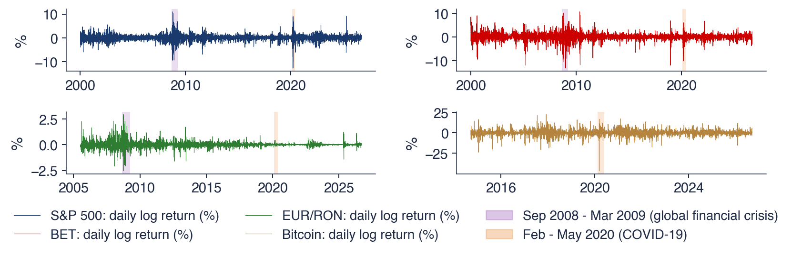

Capitolul 5: Volatilitate condiționată: ARCH și GARCH
Daniel Traian PELE
Academia de Studii Economice din București IDA Institute Digital Assets Blockchain Research Center AI4EFin Artificial Intelligence for Energy Finance Academia Română, Institutul de Prognoză Economică MSCA Digital Finance
Capitolul întreabă dacă riscul de mîine poate fi prognozat atunci cînd randamentul de mîine nu poate fi. Capitolele 1–3 au modelat media condiționată a unei serii, cu modele ARMA și ARIMA. Aici obiectul modelului este varianța condiționată, iar media are un rol secundar.
Traseul are patru etape. Prima documentează faptele stilizate ale randamentelor și testele pentru efecte ARCH. A doua definește varianța condiționată și construiește modelele ARCH și GARCH. A treia le estimează prin verosimilitate maximă, cu inovații Student-t și cu un model ARMA pentru medie. A patra adaugă asimetria, diagnosticarea, prognoza varianței și evaluarea ei, precum și un VaR 1% pe o zi. Seminarul 5 precedă acest curs și introduce aceleași date.
Pe scurt
Întrebarea: dacă randamentul de mîine nu poate fi anticipat, poate fi anticipat riscul de mîine?
Capitolele 1–3 au modelat media condiționată a unei serii; acest capitol modelează varianța ei condiționată
Traseul capitolului
faptele stilizate ale randamentelor; ACF a pătratelor randamentelor și testul ARCH-LM
media și varianța condiționată; ARCH(\(q\)) și GARCH(1,1); persistența, IGARCH și EWMA
estimarea prin verosimilitate maximă cu pachetul arch; inovații Student-t; modele ARMA-GARCH
asimetria (GJR, EGARCH), diagnosticarea, prognoza varianței și evaluarea ei, VaR 1%
Date: S&P 500, BET, EUR/RON (cursul de referință BNR) și Bitcoin, zilnic; Seminarul 5 are loc înaintea acestui curs
Rezultatele urmează traseul capitolului. Cititorul trebuie să poată enumera faptele stilizate și testa efectele ARCH, să deosebească varianța condiționată de cea necondiționată și să explice de ce randamentele pot fi necorelate și totuși dependente. Pe partea de modele, cititorul scrie modelele ARCH(\(q\)), GARCH(1,1) și ARMA-GARCH și calculează persistența, varianța de lungă durată și timpul de înjumătățire.
Pe partea empirică, cititorul estimează în Python modele GARCH prin verosimilitate maximă, alege distribuția inovațiilor și verifică reziduurile standardizate. Ultimele rezultate privesc asimetria, măsurată cu GJR-GARCH, EGARCH și curba de impact a știrilor, și prognoza: prognoze ale varianței pe mai multe orizonturi, evaluarea lor cu funcția de pierdere QLIKE și un VaR 1% pe o zi.
Pe scurt
Enumerați faptele stilizate ale randamentelor financiare și testați efectele ARCH cu ACF a pătratelor și testul ARCH-LM
Deosebiți varianța condiționată de cea necondiționată și explicați de ce randamentele pot fi necorelate, dar dependente
Scrieți modelele ARCH(\(q\)), GARCH(1,1) și ARMA-GARCH; calculați persistența, varianța de lungă durată și timpul de înjumătățire
Estimați modele GARCH prin verosimilitate maximă în Python, alegeți distribuția inovațiilor și verificați reziduurile standardizate
Măsurați asimetria cu GJR-GARCH, EGARCH și curba de impact a știrilor
Prognozați varianța pe mai multe orizonturi, evaluați prognozele cu QLIKE și calculați un VaR 1% pe o zi
Manualul cursului este Huang și Petukhina (2022), al cărui capitol 6 tratează seriile de timp financiare și modelele ARCH și GARCH. Tsay (2010), capitolul 3, prezintă mai pe larg modelele de volatilitate, cu aplicații financiare, iar Franke, Härdle și Hafner (2019), capitolul 13, le plasează în statistica piețelor financiare. Teoria verosimilității maxime pentru modelele de serii de timp cu heteroscedasticitate se găsește în Hamilton (1994), capitolul 21.
Calculele se fac în Python. Pachetul arch estimează modelele din familia ARCH, iar statsmodels oferă testele Ljung–Box și ARCH-LM. Quantlet-urile capitolului reproduc fiecare grafic și tabel, iar notebook-ul cursului rulează în Google Colab.
Traditional econometric models assume a constant one-period forecast variance. To generalize this implausible assumption, a new class of stochastic processes called autoregressive conditional heteroscedastic (ARCH) processes are introduced in this paper.
Modelele din capitolele 1–3 descriu media condiționată a unei serii: cea mai bună prognoză a valorii de mîine, dat fiind trecutul. Pentru randamentele zilnice ale activelor financiare, această prognoză este aproape inutilă, deoarece direcția variației de mîine este aproape imprevizibilă. Mărimea variației de mîine este o altă problemă. Variațiile mari apar grupate, iar o zi agitată face mai probabilă o altă zi agitată. Un model care presupune o varianță constantă, cum este zgomotul alb (white noise), nu vede deloc această structură, chiar dacă descrie bine media.
Acest capitol modelează varianța condiționată (conditional variance). Engle (1982) a introdus pătratul șocului de ieri în varianța de azi, iar Bollerslev (1986) a adăugat varianța de ieri; rezultatul este modelul GARCH(1,1), care rămîne și astăzi reperul domeniului. Capitolul aplică aceste modele pe patru serii zilnice cu comportamente foarte diferite: indicele S&P 500, indicele BET al Bursei de Valori București, cursul de referință EUR/RON al Băncii Naționale a României (BNR) și Bitcoin. Datele se opresc la 18 septembrie 2026.
Modelul pentru varianță schimbă mai multe rezultate practice. Intervalele de prognoză se lărgesc în crize și se îngustează în perioadele liniștite. Măsurile de risc, de exemplu VaR 1% pe o zi, urmează starea pieței. Persistența volatilității se poate măsura în zile, prin timpul de înjumătățire (half-life) al unui șoc de varianță. Pentru S&P 500, modelul GARCH(1,1) cu inovații Student-t dă un timp de înjumătățire de 131 de zile de tranzacționare, iar VaR 1% pe o zi la 18 septembrie 2026 este 1,75%.

Randamentele logaritmice zilnice, în %, ale indicilor S&P 500 și BET (din 2000), ale cursului de referință EUR/RON (din iulie 2005) și ale Bitcoin (din septembrie 2014), pînă la 18 septembrie 2026; benzile colorate marchează criza financiară globală (septembrie 2008 – martie 2009) și crahul COVID-19 (februarie – mai 2020).
Ce veți putea face
Testați efectele ARCH cu ACF a pătratelor randamentelor, testul Ljung–Box pe pătrate și testul ARCH-LM.
Deduceți varianța necondiționată, kurtosis-ul, persistența și timpul de înjumătățire ale modelelor ARCH și GARCH.
Estimați prin verosimilitate maximă modele GARCH, GJR-GARCH, EGARCH și ARMA-GARCH și alegeți distribuția inovațiilor.
Interpretați reziduurile standardizate, curba de impact a știrilor și o comparație de prognoze cu QLIKE și testul Diebold–Mariano.
Calculați prognoze ale varianței pe mai mulți pași și un VaR 1% pe o zi dintr-un model GARCH.
RezumatIdeile principale, formulele și întrebările de autoevaluare.
Faptele stilizate ale randamentelor financiare
Faptele stilizate (stylised facts) sînt regularități empirice valabile pe mai multe piețe, perioade și frecvențe de observare. Pentru randamentele zilnice, trei dintre ele dau forma întregului capitol: cozile groase (heavy tails), autocorelația aproape nulă a randamentelor și autocorelația puternică, care scade lent, a pătratelor lor. Al treilea fapt este volatility clustering, iar el este motivul pentru care avem nevoie de modele ale varianței condiționate.
Secțiunea analizează cele patru serii ale capitolului: întîi ca grafice în timp, apoi prin statistici descriptive și funcții de autocorelație și, în final, prin două teste formale pentru efecte ARCH: testul Ljung–Box aplicat pătratelor reziduurilor și testul ARCH-LM al lui Engle (1982).
Întrebare pentru sală În ce an a fost cea mai mică abaterea standard zilnică a randamentelor S&P 500?
Răspuns
În 2017: 0,42%, urmat de 2006 (0,63%) și 2005 (0,65%). Între septembrie 2008 și martie 2009 abaterea standard a fost 3,52%, de 8,3 ori mai mare, iar în februarie–mai 2020, 3,70% (de 8,8 ori). La EUR/RON cel mai calm an a fost 2024 (0,025%), cel mai agitat 2008 (0,72%): BNR a ținut leul aproape fix în 2020, cînd acțiunile treceau prin cea mai mare furtună.
Graficul arată randamentele logaritmice zilnice în procente, \(r_t = 100(\ln P_t - \ln P_{t-1})\), unde \(P_t\) este prețul de închidere sau cursul din ziua \(t\). Randamentele logaritmice se adună în timp, iar înmulțirea cu 100 le aduce pe o scară pe care o variație zilnică tipică este în jur de 1. Scara contează și pentru estimare, după cum arată secțiunea despre verosimilitatea maximă. Seriile S&P 500 și BET încep în 2000, cursul de referință EUR/RON în iulie 2005, iar Bitcoin în septembrie 2014; toate patru se termină la 18 septembrie 2026.
Cele patru panouri au scări verticale diferite, de aceea comparăm tiparele, nu nivelurile. În fiecare panou, seria arată ca un zgomot în jurul lui zero, a cărui amplitudine se schimbă în timp. Benzile colorate marchează criza financiară globală, din septembrie 2008 pînă în martie 2009, și crahul COVID-19, din februarie pînă în mai 2020. În ambele episoade, indicii de acțiuni au perioade lungi cu variații mari de ambele semne, în timp ce anii dinainte și de după sînt mult mai liniștiți.
Pe scurt
Randamente logaritmice zilnice \(r_t = 100(\ln P_t - \ln P_{t-1})\), în %, pînă la 18 septembrie 2026: S&P 500 și BET din 2000, EUR/RON (cursul de referință BNR) din iulie 2005, Bitcoin din septembrie 2014
Zonele colorate: criza financiară globală (septembrie 2008 – martie 2009) și crahul COVID-19 (februarie – mai 2020)
Tiparul comun este alternanța dintre anii liniștiți și furtuni: variațiile mari sînt urmate de variații mari, de orice semn, iar variațiile mici de variații mici. Mandelbrot (1963) a descris acest comportament în prețurile speculative; astăzi el se numește volatility clustering. Fenomenul privește mărimea variațiilor, nu direcția lor, de aceea nu se vede în autocorelația randamentelor.
Cifrele arată cît de mari sînt oscilațiile. Abaterea standard zilnică a S&P 500 a fost 0,42% în 2017, un an liniștit, 3,52% din septembrie 2008 pînă în martie 2009, de 8,3 ori mai mare, și 3,70% din februarie pînă în mai 2020, de 8,8 ori mai mare. Cursul EUR/RON se comportă altfel: abaterea lui standard zilnică a fost 0,78% în criza din 2008, dar doar 0,10% în 2020, deoarece BNR a menținut leul aproape fix în timpul pandemiei. Volatilitatea unui curs administrat reflectă politica băncii centrale tot atît cît reflectă piața.
Un model cu varianță constantă, cum este zgomotul alb din Capitolul 1, nu descrie niciuna dintre aceste serii. El ar atribui aceeași probabilitate unei variații de 3% în 2017 și în martie 2020.
Pe scurt
Anii liniștiți alternează cu furtunile: variațiile mari urmează după variații mari, de orice semn
este fenomenul de volatility clustering, descris prima dată de Mandelbrot (1963)
S&P 500: abaterea standard zilnică 0,42% în 2017, 3,52% din septembrie 2008 pînă în martie 2009 (\(\times\)8,3) și 3,70% în februarie–mai 2020 (\(\times\)8,8)
EUR/RON: 0,78% în criza din 2008, doar 0,10% în 2020: BNR a menținut leul aproape fix
Un model cu varianță constantă (zgomot alb, Capitolul 1) nu descrie niciuna dintre aceste serii
Cele două fotografii marchează cele două episoade colorate în grafice. La 15 septembrie 2008, Lehman Brothers a intrat în faliment, iar criza financiară a intrat în faza acută. În martie 2020, pandemia COVID-19 a închis economiile, iar districtul financiar din New York s-a golit.
Ambele episoade arată proprietatea pe care modelul GARCH o va surprinde printr-un singur număr: persistența (persistence). Calmul nu a revenit a doua zi după șoc, ci abia după luni. Un șoc mare de volatilitate crește varianța pentru mult timp, iar varianța revine apoi încet la nivelul obișnuit. Timpul de înjumătățire calculat mai tîrziu în capitol transformă această observație într-o mărime măsurabilă.
Tabelul rezumă fiecare serie prin numărul de observații zilnice \(T\), abaterea standard (ab. std., în % pe zi), asimetrie, kurtosis, autocorelațiile de ordinul întîi ale lui \(r_t\) și \(r_t^2\), statistica Ljung–Box \(Q(10)\) pentru randamente și pentru pătratele lor și statistica ARCH-LM cu 5 laguri. Kurtosis-ul este \(K = E[(r-\mu)^4]/\sigma^4\), iar asimetria (skewness) este \(E[(r-\mu)^3]/\sigma^3\); distribuția Normală are \(K = 3\) și asimetria 0.
Primul fapt sînt cozile groase. Kurtosis-ul variază de la 13,7 pentru S&P 500 la 18,1 pentru EUR/RON, mult peste 3. Zilele extreme sînt deci mult mai frecvente decît prevede distribuția Normală. Indicii de acțiuni și Bitcoin au asimetrie negativă (−0,35, −0,65 și −0,70), deci scăderile lor mari sînt mai extreme decît creșterile mari; cursul EUR/RON are asimetrie pozitivă, 0,73: un randament pozitiv înseamnă un leu mai slab, deci variațiile lui cele mai extreme sînt deprecieri.
Al doilea fapt este contrastul dintre niveluri și pătrate. Statistica Ljung–Box \(Q(10)\) se compară cu distribuția \(\chi^2(10)\), a cărei valoare critică de 5% este 18,31. Pentru randamente, ea este între 20 (Bitcoin) și 222 (EUR/RON), deci în niveluri există o anumită autocorelație, dar pentru pătrate este între 213 (Bitcoin) și 6133 (S&P 500), de 11 pînă la 64 de ori mai mare. Statistica ARCH-LM cu 5 laguri, comparată cu valoarea critică de 5% a distribuției \(\chi^2(5)\), 11,07, este între 115 și 1684. Fiecare serie respinge la mare distanță ipoteza absenței efectelor ARCH.
Pe scurt
\(T\)
ab. std.
asim.
kurtosis
\(\hat\rho_1(r)\)
\(\hat\rho_1(r^2)\)
\(Q(10)\), \(r\)
\(Q(10)\), \(r^2\)
LM(5)
S&P 500
6 714
\(1{,}21\)
\(\ensuremath{-}0{,}35\)
\(13{,}7\)
\(\ensuremath{-}0{,}10\)
\(0{,}31\)
96
6133
1684
BET
6 670
\(1{,}40\)
\(\ensuremath{-}0{,}65\)
\(14{,}1\)
\(0{,}11\)
\(0{,}33\)
108
2440
982
EUR/RON
5 352
\(0{,}28\)
\(0{,}73\)
\(18{,}1\)
\(0{,}17\)
\(0{,}34\)
222
2420
871
Bitcoin
4 384
\(3{,}49\)
\(\ensuremath{-}0{,}70\)
\(15{,}0\)
\(\ensuremath{-}0{,}02\)
\(0{,}14\)
20
213
115
Cozi groase: kurtosis-ul între 13,7 și 18,1, mult peste 3, valoarea distribuției Normale
Autocorelație mică în \(r_t\), autocorelație puternică în \(r_t^2\): \(Q(10)\) al pătratelor este de 11–64 de ori mai mare
\(Q(10)\): statistica lui Ljung și Box (1978) (Capitolul 1), \(\chi^2(10)\), valoarea de 5%: 18,31; LM(5): testul ARCH-LM (peste două slide-uri), \(\chi^2(5)\), valoarea de 5%: 11,07
Întrebare pentru sală Înlocuiți r² cu |r|. Cîte dintre cele 50 de autocorelații ale lui |r| pentru S&P 500 ies din bandă, și cît este autocorelația la lagul 50?
Răspuns
Toate 50 ies din bandă, iar la lagul 50 autocorelația este 0,127, față de 0,053 pentru r²; la lagul 1: 0,289 față de 0,313. Valoarea absolută este mai puțin dominată de cîteva zile extreme decît pătratul, deci memoria mărimii randamentelor apare și mai clar. Semnul (r) rămîne aproape imprevizibil: 15 autocorelații din 50 ies din bandă, cele mai multe mici.
Graficul arată funcția de autocorelație (autocorrelation function, ACF) de selecție a lui \(r_t\) (barele albastre) și a lui \(r_t^2\) (barele roșii), pentru lagurile 1–50, cîte un panou pentru fiecare piață. Banda colorată \(\pm 1{,}96/\sqrt{T}\) este banda aproximativă de 95% pentru autocorelațiile unei serii i.i.d. (independente și identic distribuite): o bară în afara benzii este, luată separat, semnificativă la 5%.
Barele albastre rămîn aproape în întregime în bandă, cu excepția primului lag pentru BET și EUR/RON. Barele roșii sînt pozitive, mari și scad lent: pentru S&P 500 ele pornesc de peste 0,3 și sînt încă deasupra benzii după 50 de zile de tranzacționare, adică după circa două luni și jumătate. Bitcoin este o excepție de grad, nu de natură: barele roșii sînt mai mici, dar ies totuși din bandă la mai multe laguri.
Pe scurt
ACF de selecție (autocorrelation function, funcția de autocorelație, Capitolul 1) a lui \(r_t\) și a lui \(r_t^2\), lagurile 1–50, cu banda \(\pm 1{,}96/\sqrt{T}\) a unei serii i.i.d. (independente și identic distribuite)
Randamentele sînt apropiate de un zgomot alb. Aproape toate autocorelațiile lor sînt în bandă, deci direcția variației de mîine este aproape imprevizibilă pe baza randamentelor trecute. BET este excepția vizibilă, cu \(\hat\rho_1 = 0{,}11\): pe o piață mai puțin lichidă, prețurile se ajustează mai încet la știri, iar aceasta creează o mică autocorelație pozitivă, de tipul celor modelate în Capitolul 2.
Pătratele randamentelor spun altceva. Pentru S&P 500, autocorelația lui \(r_t^2\) este 0,31 la lagul 1 și încă 0,05 la lagul 50, iar toate cele 50 de laguri sînt în afara benzii. O variație mare azi face mai probabilă o variație mare mîine, deci mărimea variației de mîine este previzibilă. Bitcoin arată același tipar, mai slab, cu \(\hat\rho_1(r_t^2) = 0{,}14\), deoarece cîteva zile extreme domină pătratele și diluează corelațiile.
Împreună, cele două ACF arată că necorelat nu înseamnă independent. O serie poate avea autocorelație zero la toate lagurile și totuși să fie dependentă, deoarece o funcție neliniară a ei, aici pătratul, este autocorelată. Randamentele zilnice sînt apropiate de zgomotul alb, dar nu sînt i.i.d., distincția făcută în Capitolul 1.
Pe scurt
Randamentele: aproape toate autocorelațiile sînt în bandă (BET: \(\hat\rho_1 = 0{,}11\), o piață mai puțin lichidă; Capitolul 2)
direcția variației de mîine este aproape imprevizibilă
Pătratele randamentelor: S&P 500 0,31 la lagul 1 și încă 0,05 la lagul 50; 50 din 50 de laguri în afara benzii
mărimea variației de mîine este previzibilă: o variație mare azi face mai probabilă o variație mare mîine
Necorelat nu înseamnă independent: \(r_t\) este apropiat de zgomotul alb, dar nu este i.i.d. (Capitolul 1)
Bitcoin: mai slab, dar semnificativ (\(\hat\rho_1(r_t^2) = 0{,}14\)): cîteva zile extreme domină pătratele
O serie are efecte ARCH atunci cînd varianța ei condiționată depinde de trecut. Numele vine de la modelul ARCH din secțiunea 3, dar testele nu presupun acest model; ele întreabă doar dacă pătratele șocurilor trecute anticipează pătratul șocului curent. Ambele teste se aplică reziduurilor \(\hat\varepsilon_t\) ale unui model pentru medie; pentru randamente cu medie constantă, reziduurile sînt pur și simplu \(r_t - \bar r\).
Primul test este testul Ljung–Box aplicat pătratelor reziduurilor, așa cum l-au propus McLeod și Li (1983):
unde \(\hat\rho_k(\hat\varepsilon^2)\) este autocorelația de selecție a pătratelor reziduurilor la lagul \(k\),\(m\) numărul de laguri, iar \(T\) numărul de observații. În ipoteza nulă a absenței efectelor ARCH, \(Q(m)\) urmează aproximativ distribuția \(\chi^2(m)\). Statistica este cea a lui Ljung și Box (1978); se schimbă doar seria căreia i se aplică.
Al doilea este testul ARCH-LM al lui Engle (1982), un test de tip multiplicator Lagrange (Lagrange multiplier), calculat dintr-o regresie auxiliară estimată prin metoda celor mai mici pătrate (OLS, ordinary least squares):
Aici \(q\) este numărul de pătrate trecute, \(R^2\) coeficientul de determinare al regresiei, iar \(n\) numărul de observații folosite în ea. Dacă pătratele trecute nu au putere predictivă, \(R^2\) este aproape de zero, iar \(nR^2\) este mic. Aceleași două teste se aplică din nou reziduurilor standardizate, după estimarea unui model de volatilitate; atunci ele verifică dacă modelul a eliminat efectele ARCH.
Pe scurt
Efecte ARCH: varianța condiționată depinde de trecut (numele vine de la modelul ARCH, secțiunea 3)
Ljung–Box pe pătrate (testul lui McLeod și Li (1983)): \(Q(m) = T(T+2)\sum_{k=1}^{m}\hat\rho_k^2(\hat\varepsilon^2)/(T-k)\)
\(\hat\rho_k(\hat\varepsilon^2)\): autocorelația de selecție a pătratelor reziduurilor la lagul \(k\); \(m\): numărul de laguri; \(T\): numărul de observații
\(\hat\varepsilon_t\): reziduurile modelului pentru medie (pentru randamente, \(r_t - \bar r\)); în ipoteza \(H_0\) (fără efecte ARCH), \(Q(m) \sim \chi^2(m)\)
Testul ARCH-LMEngle (1982): test LM (Lagrange multiplier, multiplicatorul Lagrange) din regresia auxiliară
\(\hat\varepsilon_t^2 = b_0 + b_1\hat\varepsilon_{t-1}^2 + \dots + b_q\hat\varepsilon_{t-q}^2 + u_t\), estimată prin OLS (ordinary least squares, metoda celor mai mici pătrate)
\(b_0, \dots, b_q\): coeficienții; \(q\): numărul de pătrate trecute incluse; \(R^2\): coeficientul de determinare al acestei regresii
\(H_0\): \(b_1 = \dots = b_q = 0\); \(\mathrm{LM} = n R^2 \sim \chi^2(q)\), \(n\) = numărul de observații din regresie
Ambele teste se aplică reziduurilor modelului pentru medie, înainte și după estimarea unui model de volatilitate
Exemplul aplică (5.1) pentru BET. Modelul pentru medie este un AR(1), ordinul ales în Capitolul 2, cu coeficientul estimat \(\hat\phi = 0{,}109\). Reziduurile lui \(\hat\varepsilon_t\) se ridică la pătrat, iar pătratele se regresează pe propriile cinci laguri, deci \(q = 5\).
Regresia estimată este \(\hat\varepsilon_t^2 = 0{,}862 + 0{,}276\,\hat\varepsilon_{t-1}^2 + 0{,}099\,\hat\varepsilon_{t-2}^2 + 0{,}088\,\hat\varepsilon_{t-3}^2 - 0{,}015\,\hat\varepsilon_{t-4}^2 + 0{,}102\,\hat\varepsilon_{t-5}^2\), cu \(R^2 = 0{,}1526\) pe \(n = 6\,664\) de observații. Statistica testului este \(\mathrm{LM} = nR^2 = 6\,664 \times 0{,}1526 = 1017\). Valoarea critică de 5% a distribuției \(\chi^2(5)\) este 11,07, deci ipoteza absenței efectelor ARCH este respinsă la foarte mare distanță: varianța BET depinde de pătratele ultimelor cinci șocuri.
Un \(R^2\) de 0,15 ar fi modest pentru o regresie în niveluri, dar pătratele randamentelor sînt măsuri extrem de zgomotoase ale varianței, astfel încît chiar și un model perfect al varianței explică doar o mică parte din variația lor. În acest context, un \(R^2\) de 0,15 este un semnal puternic. Coeficientul primului lag, 0,276, este cel mai mare, iar coeficienții scad odată cu lagul, tiparul pe care îl descriu modelele ARCH și GARCH.
Pe scurt
Modelul pentru medie: AR(1) pentru randamentele BET (Capitolul 2), \(\hat\phi = 0{,}109\); reziduurile \(\hat\varepsilon_t\); \(q = 5\)
Randamentele zilnice ale celor patru piețe au în comun cozi groase, volatility clustering, autocorelație mică în randamente și autocorelație puternică în pătratele lor. Efectele ARCH se detectează cu testul Ljung–Box pe pătratele reziduurilor și cu testul ARCH-LM, \(\mathrm{LM} = nR^2 \sim \chi^2(q)\). Toate cele patru serii resping la mare distanță ipoteza nulă a absenței efectelor ARCH.
Pe scurt
Cozi groase, volatility clustering, autocorelație mică în \(r_t\), autocorelație puternică în \(r_t^2\)
Toate cele patru serii resping \(H_0\) la mare distanță de pragul critic
Sinteza secțiunii
Secțiunea a stabilit ce trebuie să reproducă un model pentru randamentele zilnice. Media este aproape imprevizibilă, dar varianța se schimbă în timp și este previzibilă din trecutul recent: o variație mare azi semnalează o varianță mare mîine. Cozile sînt mult mai groase decît cele ale distribuției Normale. Pe toate cele patru piețe, testele pentru efecte ARCH resping ipoteza varianței constante cu sute sau mii de unități peste valoarea critică, așa că pasul următor este un model în care varianța însăși depinde de trecut.
Media condiționată și varianța condiționată
Înainte de a scrie un model de volatilitate, capitolul are nevoie de un limbaj precis pentru „varianța dat fiind trecutul”. Această secțiune definește mulțimea de informații, media condiționată și varianța condiționată, precum și descompunerea \(r_t = \mu_t + \sigma_t z_t\) pe care se sprijină toate modelele capitolului. Apoi arată, cu un exemplu cu două stări și cu reziduurile unui model ARMA pentru BET, de ce un model corect pentru medie poate lăsa o dependență puternică în pătrate.
Notăm cu \(\mathcal{F}_{t-1}\) informația disponibilă la sfîrșitul zilei \(t-1\), adică toate valorile trecute ale seriei. Media condiționată \(E[X \mid \mathcal{F}_{t-1}]\) este cea mai bună prognoză a unei variabile aleatoare \(X\), în sensul erorii pătratice medii, dată fiind această informație, ca în Capitolul 2. Aplicată randamentului, ea definește media condiționată (conditional mean) \(\mu_t = E[r_t \mid \mathcal{F}_{t-1}]\). Un model ARMA este un model pentru \(\mu_t\); pentru randamentele zilnice, \(\mu_t\) este mică și aproape constantă.
Varianța condiționată este abaterea pătratică medie față de media condiționată, dat fiind trecutul:
Rădăcina ei pătrată, \(\sigma_t\), este volatilitatea condiționată (conditional volatility). Ea este cunoscută la sfîrșitul zilei \(t-1\) și se schimbă de la o zi la alta. O serie a cărei varianță condiționată nu este constantă se numește condiționat heteroscedastică (conditionally heteroskedastic).
Varianța necondiționată (unconditional variance) \(\mathrm{Var}(r_t)\) este un alt obiect: un singur număr pentru tot eșantionul, care ignoră informația din trecut. Un proces staționar poate avea o varianță necondiționată constantă, în timp ce varianța lui condiționată se schimbă în fiecare zi. Faptele stilizate privesc exact acest caz.
Pe scurt
\(\mathcal{F}_{t-1}\): informația disponibilă la sfîrșitul zilei \(t-1\) (toate valorile trecute)
media condiționată \(E[X \mid \mathcal{F}_{t-1}]\): cea mai bună prognoză a lui \(X\), dat fiind trecutul (Capitolul 2)
Media condiționată: \(\mu_t = E[r_t \mid \mathcal{F}_{t-1}]\)
un model ARMA (Capitolul 2) este un model pentru \(\mu_t\); pentru randamentele zilnice, \(\mu_t\) este mică și aproape constantă
Inovațiile (innovations) \(z_t\) sînt i.i.d., cu media 0 și varianța 1; distribuția lor poate fi Normală, Student-t sau o altă lege standardizată. Șocul (shock) \(\varepsilon_t\) este partea imprevizibilă a randamentului. Atît \(\mu_t\), cît și \(\sigma_t\) depind doar de trecut, deci sînt cunoscute la \(t-1\), în timp ce \(z_t\) apare abia în ziua \(t\).
Rezultă trei consecințe. Prima: \(E[\varepsilon_t \mid \mathcal{F}_{t-1}] = \sigma_t E[z_t] = 0\), deci șocurile formează o diferență de martingal (martingale difference), iar o diferență de martingal cu varianță finită este necorelată, adică zgomot alb. A doua: \(\mathrm{Var}(\varepsilon_t \mid \mathcal{F}_{t-1}) = \sigma_t^2 E[z_t^2] = \sigma_t^2\), deci varianța șocului de mîine este previzibilă. A treia: șocurile sînt necorelate, dar nu independente; cînd \(\sigma_t^2\) depinde de \(\varepsilon_{t-1}^2\), pătratele \(\varepsilon_t^2\) și \(\varepsilon_{t-1}^2\) sînt corelate.
Descompunerea separă cele două sarcini de modelare. Un model ARMA, ca în Capitolul 2, descrie \(\mu_t\); un model GARCH, subiectul acestui capitol, descrie \(\sigma_t^2\). Estimate împreună, ele formează un model ARMA-GARCH.
Pe scurt
Toate modelele din acest capitol: \(r_t = \mu_t + \varepsilon_t\), \(\varepsilon_t = \sigma_t z_t\)
\(z_t\): inovațiile, i.i.d., cu media 0 și varianța 1 (Normale, Student-t, …)
\(\varepsilon_t\): șocul; \(\mu_t\) și \(\sigma_t\) depind doar de trecut
Consecințe
\(E[\varepsilon_t \mid \mathcal{F}_{t-1}] = \sigma_t E[z_t] = 0\): șocurile sînt o diferență de martingal, deci sînt necorelate (zgomot alb)
\(\mathrm{Var}(\varepsilon_t \mid \mathcal{F}_{t-1}) = \sigma_t^2\): varianța este previzibilă
\(\varepsilon_t\) sînt necorelate, dar nu independente: \(\varepsilon_t^2\) este corelat cu \(\varepsilon_{t-1}^2\)
Două modele, cîte unul pentru fiecare moment: ARMA pentru \(\mu_t\) (Capitolul 2), GARCH pentru \(\sigma_t^2\) (acest capitol); împreună: ARMA-GARCH
Exemplu rezolvat: varianța condiționată și varianța necondiționată
Considerăm o piață cu zile liniștite, în care \(\sigma_t^2 = 0{,}5\), și zile agitate, în care \(\sigma_t^2 = 4{,}5\), fiecare cu probabilitatea 1/2 și cu media zero. Legea varianței totale (law of total variance) descompune varianța necondiționată în media varianțelor condiționate și varianța mediei condiționate:
Aici al doilea termen este zero, deci \(\mathrm{Var}(r_t) = 0{,}5 \times 0{,}5 + 0{,}5 \times 4{,}5 = 2{,}50\), iar abaterea standard necondiționată este \(\sqrt{2{,}5} = 1{,}58\%\).
Valoarea necondiționată este o medie care nu descrie nicio zi reală. O zi liniștită are \(\sigma_t = \sqrt{0{,}5} = 0{,}71\%\), iar o zi agitată \(\sigma_t = \sqrt{4{,}5} = 2{,}12\%\). Varianța condiționată spune în ce fel de zi ne aflăm; varianța necondiționată nu spune. Un analist de risc care folosește 1,58% ar supraestima riscul în zilele liniștite și l-ar subestima în zilele agitate.
Amestecul are și o altă consecință. Cu \(z_t\) Normale, kurtosis-ul lui \(r_t\) este \(3E[\sigma_t^4]/(E[\sigma_t^2])^2\). Aici \(E[\sigma_t^4] = 0{,}5 \times 0{,}25 + 0{,}5 \times 20{,}25 = 10{,}25\) și \((E[\sigma_t^2])^2 = 6{,}25\), deci kurtosis-ul este \(3 \times 10{,}25/6{,}25 = 4{,}92\). O varianță variabilă în timp creează singură cozi groase, chiar dacă distribuția fiecărei zile este Normală. O parte din kurtosis-ul din tabelul secțiunii precedente se explică astfel.
Pe scurt
O piață are zile liniștite (\(\sigma_t^2 = 0{,}5\)) și zile agitate (\(\sigma_t^2 = 4{,}5\)), fiecare cu probabilitatea \(1/2\); media este 0
Întrebare pentru sală Creșteți ordinul AR al mediei de la 1 la 5. Dispar efectele ARCH din reziduuri?
Răspuns
Nu. Q(10) al reziduurilor scade de la 29,7 la 15,4 (p = 0,009), dar Q(10) al pătratelor crește de la 2496 la 2562, iar ARCH-LM(5) rămîne în jur de 1020 (pentru AR(1): n R² = 6664 × 0,1526 = 1017). Un model mai bogat pentru medie elimină autocorelația nivelului, nu pe cea a pătratelor: varianța condiționată cere un model separat. În dreapta, aceleași reziduuri împărțite la volatilitatea GARCH(1,1) nu mai au efecte ARCH pentru niciun p: Q(10) al lui ẑ² rămîne între 7,0 și 8,3 (p > 0,6).
Graficul compară două modele pentru BET. În stînga, un model AR(1) pentru medie, cu varianță constantă; ordinul \(p = 1\) a fost ales după criteriul informațional bayesian (BIC) dintre AR(0) și AR(5). Barele albastre sînt autocorelațiile reziduurilor lui, iar barele roșii cele ale pătratelor reziduurilor. În dreapta, aceeași medie AR(1) cu o varianță GARCH(1,1) și inovații Student-t, modelul din secțiunea 6; barele sînt autocorelațiile reziduurilor standardizate (standardised residuals) \(\hat z_t = \hat\varepsilon_t/\hat\sigma_t\) și ale pătratelor lor.
Cele două panouri au aceeași axă verticală. În stînga, barele roșii se ridică mult deasupra benzii colorate la toate lagurile pînă la 30; în dreapta, ambele tipuri de bare rămîn aproape de zero. Comparația este corespondentul empiric al descompunerii (5.2): modelul pentru medie se ocupă de barele albastre, iar de cele roșii se ocupă doar un model pentru varianță.
Pe scurt
BET: stînga, un AR(1) pentru medie (ordinul ales după BIC dintre AR(0)–AR(5): \(p = 1\)), cu varianță constantă; dreapta, același AR(1) cu o varianță GARCH(1,1)-t (secțiunea 6)
În stînga, reziduurile modelului AR(1) arată aproape ca un zgomot alb, deci verificarea Box–Jenkins din Capitolul 2, care privește doar reziduurile, ar fi aproape trecută. Pătratele lor au însă autocorelația de ordinul întîi 0,34 și statistica Ljung–Box \(Q(10) = 2496\), mult peste valoarea critică de 5%, 18,31. Modelul AR(1) a surprins media, dar a lăsat efecte ARCH puternice.
În dreapta, după împărțirea la volatilitatea GARCH \(\hat\sigma_t\), pătratele sînt curate: autocorelația lor de ordinul întîi este 0,018, \(Q(10)\) este 7,2, cu valoarea p 0,705, iar statistica ARCH-LM este 4,8, cu valoarea p 0,446. Rămîne puțină autocorelație în niveluri, cu \(Q(10) = 28{,}6\) pentru \(\hat z_t\), ceea ce sugerează că media BET are mai multă structură decît poate surprinde un AR(1).
Lecția este una de metodă. Verificarea unui model trebuie să privească atît \(\hat\varepsilon_t\), cît și \(\hat\varepsilon_t^2\). Un test de zgomot alb doar pe reziduuri nu vede varianța, iar un model care îl trece poate produce intervale de prognoză foarte greșite.
Pe scurt
Stînga: reziduurile arată aproape ca un zgomot alb; verificarea Box–Jenkins din Capitolul 2 ar fi aproape trecută
rămîne puțină autocorelație în nivel (\(Q(10) = 28{,}6\)): media BET are mai multă structură decît un AR(1)
Lecția: verificăm atît \(\hat\varepsilon_t\), cît și \(\hat\varepsilon_t^2\); o verificare de zgomot alb doar pe \(\hat\varepsilon_t\) nu vede varianța
Descompunerea \(r_t = \mu_t + \sigma_t z_t\) dă cîte un model pentru fiecare moment: un model ARMA pentru \(\mu_t\) și un model de volatilitate pentru \(\sigma_t^2\). Șocurile sînt necorelate, dar dependente prin pătratele lor. Varianța necondiționată este media varianțelor condiționate, iar amestecul de varianțe produce cozi groase.
Pe scurt
\(r_t = \mu_t + \sigma_t z_t\): \(\mu_t\) dintr-un model ARMA, \(\sigma_t^2\) dintr-un model de volatilitate
Șocurile sînt necorelate, dar dependente prin pătratele lor
Varianța necondiționată = media varianțelor condiționate; amestecul are cozi groase
Sinteza secțiunii
Varianța condiționată este varianța randamentului de mîine, dată fiind informația de azi; varianța necondiționată este media ei pe termen lung. Șocurile construite ca \(\varepsilon_t = \sigma_t z_t\) sînt o diferență de martingal, deci zgomot alb, dar pătratele lor sînt corelate ori de cîte ori \(\sigma_t\) depinde de trecut. Pentru BET, un model AR(1) pentru medie trece verificarea de zgomot alb pe reziduuri, în timp ce pătratele lor au statistica Ljung–Box 2496; adăugarea unei varianțe GARCH(1,1) coboară această statistică la 7,2. Secțiunea următoare construiește primul model pentru \(\sigma_t^2\).
Modelul ARCH
Primul model pentru varianța condiționată face din varianța de azi o funcție liniară de pătratul șocului de ieri. Această secțiune prezintă modelul ARCH(1) al lui Engle (1982), deduce varianța lui necondiționată și kurtosis-ul, compară traiectorii ARCH simulate cu traiectorii i.i.d. și GARCH și arată pe S&P 500 de ce ARCH are nevoie de multe laguri pentru a se potrivi datelor reale.
Engle (1982) a introdus modelul de heteroscedasticitate condiționată autoregresivă (ARCH, autoregressive conditional heteroskedasticity): varianța de azi depinde de pătratele șocurilor de ieri. Prima aplicație nu a fost o piață financiară, ci varianța inflației din Regatul Unit, unde obiectul de interes era incertitudinea prognozei însăși. Modelul a fost adoptat curînd în finanțe, unde volatility clustering este trăsătura dominantă a datelor.
În 2003, Engle a primit Premiul Nobel pentru economie „pentru metode de analiză a seriilor de timp economice cu volatilitate variabilă în timp (ARCH)”. L-a împărțit cu Clive Granger, ale cărui lucrări despre regresia falsă apar în Capitolul 3, iar cele despre cointegrare în Capitolul 7. Prelegerea Nobel, Engle (2004), trece în revistă folosirea modelelor ARCH în managementul riscului.
Pe scurt
Engle (1982): ARCH (autoregressive conditional heteroskedasticity, heteroscedasticitate condiționată autoregresivă): varianța de azi depinde de pătratele șocurilor de ieri
prima aplicație: varianța inflației din Regatul Unit, nu o piață financiară
Premiul Nobel 2003: „pentru metode de analiză a seriilor de timp economice cu volatilitate variabilă în timp (ARCH)”
Constanta \(\omega\) este nivelul minim al varianței, atins după un șoc nul. Coeficientul \(\alpha\) măsoară cît de puternic reacționează varianța la pătratul șocului de ieri. Restricțiile \(\omega > 0\) și \(\alpha \ge 0\) garantează o varianță pozitivă. Deoarece intră doar pătratul șocului, un șoc mare de orice semn crește varianța de azi.
Cuvîntul „autoregresiv” se referă la pătratele șocurilor. Scriem \(\varepsilon_t^2 = \sigma_t^2 + v_t\), cu \(v_t = \sigma_t^2(z_t^2 - 1)\). Deoarece \(E[z_t^2] = 1\), avem \(E[v_t \mid \mathcal{F}_{t-1}] = 0\), deci \(v_t\) este o diferență de martingal. Înlocuind ecuația varianței, obținem
un model AR(1) pentru \(\varepsilon_t^2\), ca în Capitolul 2, cu erori \(v_t\) de tip zgomot alb.
Forma AR(1) dă direct autocorelațiile pătratelor: cînd momentul de ordinul patru există, \(\rho_k(\varepsilon_t^2) = \alpha^k\). ARCH(1) produce deci clustering, dar corelația pătratelor scade geometric, cu rata \(\alpha\). Pentru valori moderate ale lui \(\alpha\), această scădere este mult mai rapidă decît scăderea lentă observată la pătratele randamentelor reale.
Șocurile unui ARCH(1) au media zero și sînt necorelate la orice lag \(k \ne 0\), deci sînt zgomot alb. Cînd \(\alpha < 1\), procesul este staționar, iar varianța lui necondiționată rezultă aplicînd media în ecuația varianței: \(\bar\sigma^2 = E[\varepsilon_t^2] = \omega + \alpha\bar\sigma^2\), deci
\[\bar\sigma^2 = \frac{\omega}{1-\alpha}.\]
Cu inovații Normale și \(3\alpha^2 < 1\), kurtosis-ul șocurilor este
\[K = 3\,\frac{1-\alpha^2}{1-3\alpha^2} > 3.\]
Inovațiile sînt Normale, dar șocurile au cozi groase, din același motiv ca în exemplul cu două stări: un amestec de distribuții Normale cu varianțe diferite. Dacă \(\alpha \ge 1/\sqrt{3} = 0{,}577\), momentul de ordinul patru este infinit, deși varianța rămîne finită cît timp \(\alpha < 1\).
În exemplul rezolvat, \(\omega = 0{,}5\) și \(\alpha = 0{,}5\). Varianța necondiționată este \(0{,}5/0{,}5 = 1{,}00\), iar kurtosis-ul este \(3 \times 0{,}75/0{,}25 = 9{,}0\). După un șoc \(\varepsilon_{t-1} = 2\), adică două abateri standard necondiționate, varianța următoare este \(\sigma_t^2 = 0{,}5 + 0{,}5 \times 4 = 2{,}50\), deci \(\sigma_t = 1{,}58\): varianța devine de peste două ori mai mare decît nivelul ei mediu, 1.
Pe scurt
\(E[\varepsilon_t] = 0\) și \(\mathrm{Cov}(\varepsilon_t, \varepsilon_{t-k}) = 0\) pentru \(k \ne 0\): zgomot alb
Varianța necondiționată (staționar dacă \(\alpha < 1\)): aplicăm media în \(\sigma_t^2 = \omega + \alpha\varepsilon_{t-1}^2\)
Întrebare pentru sală Duceți α al ARCH(1) la 0,7 (ω = 0,3). Cît este kurtosisul teoretic și cît cel de selecție?
Răspuns
Teoretic, momentul de ordinul patru nu există (3α² = 1,47 ≥ 1, pragul este α = 1/√3 = 0,577), deci kurtosisul este infinit. Kurtosisul celor 1000 de valori simulate este 11,24, iar la α = 0,9 este 34,9: o selecție finită are mereu un kurtosis finit, deci valoarea de selecție nu poate arăta că momentul nu există. La α = 0,5 teoria dă 9,0, selecția 4,91: momentul de ordinul patru converge încet.
Graficul arată trei serii simulate de cîte 1000 de valori, toate cu varianța necondiționată 1. Panoul de sus este un zgomot i.i.d. Normal. Panoul din mijloc este un ARCH(1) cu \(\omega = \alpha = 0{,}5\), modelul de pe slide-ul precedent. Panoul de jos este un GARCH(1,1) cu \(\omega = 0{,}02\),\(\alpha = 0{,}10\) și \(\beta = 0{,}88\), modelul secțiunii următoare. Deoarece toate trei au aceeași varianță, diferențele de aspect provin doar din structura de dependență.
Traiectoria ARCH(1) are vîrfuri izolate: o valoare mare este urmată de cîteva zile agitate, iar efectul dispare repede, deoarece memoria este de o zi. Traiectoria GARCH(1,1) are perioade lungi liniștite și perioade lungi agitate, exact cum arată seriile de randamente ale celor patru piețe. Kurtosis-ul de selecție este 3,12 pentru seria i.i.d., 4,91 pentru ARCH și 3,74 pentru GARCH, față de valorile teoretice 3, 9,0 și 6,06. Diferența dintre selecție și teorie arată că momentul de ordinul patru al proceselor cu cozi groase converge lent: 1000 de observații nu ajung pentru a-l estima precis.
Pe scurt
Trei serii de 1000 de valori cu varianța necondiționată 1: i.i.d. Normale; ARCH(1) cu \(\omega = \alpha = 0{,}5\); GARCH(1,1) cu \(\omega = 0{,}02\), \(\alpha = 0{,}10\), \(\beta = 0{,}88\) (secțiunea următoare)
Kurtosis-ul de selecție: i.i.d. \(3{,}12\), ARCH \(4{,}91\), GARCH \(3{,}74\) (teoretic: 3, \(9{,}0\), \(6{,}06\)): momentul de ordinul patru converge lent
Interpretare: ARCH(1) produce vîrfuri izolate; GARCH(1,1) produce perioade lungi liniștite și perioade lungi agitate, ca randamentele reale
Modelul ARCH(\(q\)) face varianța să depindă de \(q\) pătrate ale șocurilor trecute: \(\sigma_t^2 = \omega + \alpha_1\varepsilon_{t-1}^2 + \dots + \alpha_q\varepsilon_{t-q}^2\), cu \(\alpha_i \ge 0\). El este staționar dacă \(\sum_i \alpha_i < 1\), cu varianța necondiționată \(\omega/(1 - \sum_i\alpha_i)\). Slăbiciunea lui este de structură: un șoc influențează varianța exact \(q\) zile și apoi dispare din ecuație, în timp ce volatility clustering real durează luni.
Tabelul estimează ARCH(1), ARCH(5), ARCH(10) și GARCH(1,1) pe S&P 500, cu inovații Normale. Fiecare rînd dă numărul de parametri \(k\), log-verosimilitatea maximizată \(\ell\), criteriile informaționale Akaike și bayesian, \(\mathrm{AIC} = -2\ell + 2k\) și \(\mathrm{BIC} = -2\ell + k\ln T\)(Akaike, 1974; Schwarz, 1978), precum și persistența: suma coeficienților \(\alpha_i\) pentru ARCH și \(\alpha + \beta\) pentru GARCH. Valorile mai mici ale criteriilor sînt mai bune, iar BIC penalizează parametrii suplimentari mai puternic decît AIC.
Log-verosimilitatea crește de la −10305,5 pentru ARCH(1) la −9340,5 pentru ARCH(5) și −9227,6 pentru ARCH(10), deci lagurile suplimentare continuă să îmbunătățească potrivirea. Totuși GARCH(1,1), cu 4 parametri, ajunge la −9218,0, peste ARCH(10) cu 12 parametri, și are cele mai mici valori AIC (18444,0) și BIC (18471,2). Persistența crește odată cu numărul de laguri, de la 0,394 la 0,849, iar GARCH ajunge la 0,980. Un ARCH lung încearcă să aproximeze o memorie care scade lent, pe care GARCH o obține cu un singur parametru în plus.
un șoc influențează varianța exact \(q\) zile; clustering-ul real durează luni
S&P 500, \(z_t\) Normale
parametri
log-verosimilitate
AIC
BIC
\(\sum\alpha_i\) (+\(\beta\))
ARCH(1)
3
\(\ensuremath{-}10305{,}5\)
20617,0
20637,5
\(0{,}394\)
ARCH(5)
7
\(\ensuremath{-}9340{,}5\)
18695,1
18742,7
\(0{,}816\)
ARCH(10)
12
\(\ensuremath{-}9227{,}6\)
18479,3
18561,0
\(0{,}849\)
GARCH(1,1)
4
\(\ensuremath{-}9218{,}0\)
18444,0
18471,2
\(0{,}980\)
AIC (Akaike) și BIC (Bayesian information criterion, criteriul informațional bayesian): \(\mathrm{AIC} = -2\ell + 2k\), \(\mathrm{BIC} = -2\ell + k\ln T\) (Capitolul 2), \(\ell\): log-verosimilitatea maximizată, \(k\): numărul de parametri; valoarea mai mică este mai bună
Interpretare: ARCH are nevoie de zece laguri și tot pierde în fața GARCH(1,1), care are patru parametri: motivația pentru GARCH
ARCH modelează varianța ca autoregresie a pătratelor șocurilor, \(\sigma_t^2 = \omega + \sum_i\alpha_i\varepsilon_{t-i}^2\). Varianța lui necondiționată este \(\omega/(1 - \sum\alpha_i)\), iar kurtosis-ul depășește 3 chiar cu inovații Normale. Clustering-ul real cere multe laguri, pe care GARCH le înlocuiește cu un singur parametru în plus.
Pe scurt
\(\sigma_t^2 = \omega + \sum_i\alpha_i\varepsilon_{t-i}^2\): un model AR pentru pătratele șocurilor
Varianța necondiționată \(\omega/(1 - \sum\alpha_i)\); kurtosis peste 3 chiar cu inovații Normale
Clustering-ul real cere multe laguri: GARCH le înlocuiește cu un singur parametru în plus
Sinteza secțiunii
ARCH surprinde ideea centrală a capitolului: pătratul șocului de ieri anticipează varianța de azi, iar acest lucru singur produce randamente necorelate cu pătrate corelate și cozi groase. Memoria unui ARCH(\(q\)) se oprește însă după \(q\) zile, astfel că pe S&P 500 chiar și zece laguri se potrivesc mai slab decît GARCH(1,1) cu patru parametri. Secțiunea următoare adaugă în ecuație varianța de ieri și obține o memorie care scade lent.
Modelul GARCH(1,1)
GARCH(1,1) adaugă la ARCH(1) un singur termen, varianța condiționată de ieri, și transformă astfel o memorie de o zi într-o memorie a tuturor șocurilor trecute, care scade geometric. Această secțiune definește modelul, îl scrie ca ARMA(1,1) pentru pătratele șocurilor, deduce varianța de lungă durată, kurtosis-ul și timpul de înjumătățire al unui șoc și parcurge un pas de actualizare. Apoi tratează cazul de frontieră \(\alpha + \beta = 1\), modelul IGARCH, și legătura lui cu estimatorul EWMA folosit în industrie, și compară GARCH, EWMA și o fereastră mobilă în timpul crahului COVID-19.
Bollerslev (1986), pe atunci doctorand al lui Engle la University of California, San Diego, a propus adăugarea varianței de ieri în ecuația ARCH. Modelul ARCH generalizat (GARCH, generalised ARCH) care rezultă înlocuiește un ARCH(\(q\)) lung cu cîțiva parametri. Un an mai tîrziu, Bollerslev (1987) a combinat GARCH cu inovații Student-t pentru prețuri speculative și randamente, specificația folosită pentru majoritatea estimărilor din acest capitol.
GARCH(1,1) rămîne modelul de referință. Hansen și Lunde (2005) au comparat în afara eșantionului 330 de modele de volatilitate și au găsit că GARCH(1,1) este greu de depășit la cursurile de schimb; studiul lor este studiul de caz din secțiunea 9.
Pe scurt
Bollerslev (1986), doctorand al lui Engle la University of California, San Diego: adaugă în ecuație varianța de ieri
Rămîne modelul de referință: Hansen și Lunde (2005) au comparat 330 de modele de volatilitate și au găsit că GARCH(1,1) este greu de depășit la cursurile de schimb
Modelul general GARCH(\(p\),\(q\)) adaugă mai multe laguri de ambele tipuri, dar în practică specificația (1,1) este aproape întotdeauna suficientă pentru randamentele zilnice. Parametrii au o interpretare directă. Coeficientul \(\alpha\) este reacția varianței la știrile de ieri, adică la pătratul șocului. Coeficientul \(\beta\) este memoria varianței, ponderea nivelului de ieri. Suma lor \(\alpha + \beta\) este persistența, iar \(\omega\) fixează, împreună cu persistența, nivelul de lungă durată.
GARCH(1,1) este deci un ARCH(\(\infty\)) cu ponderile \(\alpha\beta^j\), care scad geometric. Toate șocurile trecute contează, iar ponderile scad cu rata \(\beta\), lent cînd \(\beta\) este aproape de 1. Așa reproduc trei parametri ai ecuației varianței scăderea lentă a ACF a pătratelor randamentelor.
GARCH(\(p\),\(q\)) adaugă mai multe laguri de ambele tipuri; în practică, (1,1) este aproape întotdeauna suficient
Interpretarea parametrilor
\(\alpha\): reacția la știrile de ieri; \(\beta\): memoria varianței
\(\alpha + \beta\): persistența; \(\omega\) fixează nivelul de lungă durată
Prin recurență: un ARCH(\(\infty\)) cu ponderi geometrice
\(\sigma_t^2 = \dfrac{\omega}{1 - \beta} + \alpha\sum_{j=0}^{\infty}\beta^j\,\varepsilon_{t-1-j}^2\): toate șocurile trecute contează, cu ponderi care scad ca \(\beta^j\)
GARCH(1,1) ca ARMA(1,1) pentru pătratele șocurilor
Ca la ARCH, scriem \(\varepsilon_t^2 = \sigma_t^2 + v_t\), cu \(v_t\) o diferență de martingal, și înlocuim \(\sigma_t^2 = \varepsilon_t^2 - v_t\) și \(\sigma_{t-1}^2 = \varepsilon_{t-1}^2 - v_{t-1}\) în (5.4):
Acesta este un model ARMA(1,1) pentru \(\varepsilon_t^2\), ca în Capitolul 2, cu coeficientul autoregresiv \(\alpha + \beta\) și coeficientul de medie mobilă \(-\beta\).
Forma ARMA preia rezultatele din capitolul 2. Procesul este staționar în covarianță dacă \(\alpha + \beta < 1\), adică dacă rădăcina AR se află în afara cercului unitate. ACF a lui \(\varepsilon_t^2\) scade ca \((\alpha + \beta)^k\), lent cînd persistența este aproape de 1, ceea ce corespunde ACF a pătratelor randamentelor reale. În principiu, modelul ar putea fi identificat din ACF și din funcția de autocorelație parțială (PACF, partial autocorrelation function) a lui \(\varepsilon_t^2\), dar erorile \(v_t\) sînt puternic heteroscedastice și au cozi groase, așa că în practică modelele GARCH se estimează prin verosimilitate maximă, subiectul secțiunii 5.
Pe scurt
Ca la ARCH, scriem \(\varepsilon_t^2 = \sigma_t^2 + v_t\) și înlocuim \(\sigma_t^2 = \varepsilon_t^2 - v_t\) în ecuație
un ARMA(1,1) (Capitolul 2) cu coeficientul AR \(\alpha + \beta\) și coeficientul MA \(-\beta\)
Consecințe
staționar în covarianță dacă \(\alpha + \beta < 1\) (rădăcina AR în afara cercului unitate)
ACF a lui \(\varepsilon_t^2\) scade ca \((\alpha + \beta)^k\): lent cînd persistența este aproape de 1, ca în ACF a pătratelor randamentelor reale
identificarea prin ACF și PACF (partial autocorrelation function, funcția de autocorelație parțială) a lui \(\varepsilon_t^2\) este posibilă în principiu, dar în practică folosim verosimilitatea maximă (secțiunea 5)
Varianța de lungă durată, kurtosis-ul, persistența și timpul de înjumătățire
Cînd \(\alpha + \beta < 1\), aplicînd media în (5.4) obținem varianța de lungă durată (long-run variance), sau necondiționată,
\[\bar\sigma^2 = \frac{\omega}{1-\alpha-\beta}.\]
Pentru randamentele zilnice, ea se raportează ca volatilitate anualizată, \(\sqrt{252\,\bar\sigma^2}\), cu 252 de zile de tranzacționare pe an. Cu inovații Normale, kurtosis-ul este \(K = 3\,[1-(\alpha+\beta)^2]/[1-(\alpha+\beta)^2-2\alpha^2]\), mai mare decît 3; pentru \(\alpha = 0{,}10\) și \(\beta = 0{,}88\) el este 6,06.
Persistența determină cît de repede revine varianța la \(\bar\sigma^2\). Prognoza dedusă în secțiunea 9 arată că o abatere de la varianța de lungă durată se micșorează în fiecare zi cu factorul \(\alpha + \beta\):\(E_t[\sigma_{t+h}^2] - \bar\sigma^2 = (\alpha+\beta)^{h-1}(\sigma_{t+1}^2 - \bar\sigma^2)\), unde \(E_t\) este media condiționată de informația din ziua \(t\), iar \(\sigma_{t+1}^2\) este varianța de mîine, cunoscută deja la \(t\). Timpul de înjumătățire este numărul de zile după care a dispărut jumătate dintr-un șoc de varianță:
Timpul de înjumătățire este foarte sensibil la persistență în apropiere de 1. Cu \(\alpha + \beta = 0{,}90\) el este 6,6 zile, cu 0,98 este 34,3 zile, iar cu 0,99 este 69,0 zile. O schimbare de 0,01 a persistenței dublează durata unui șoc; de aceea, estimările persistenței pentru cele patru piețe din secțiunea 6 se traduc în timpi de înjumătățire foarte diferiți.
Pe scurt
Varianța de lungă durată (necondiționată): \(\bar\sigma^2 = \omega/(1 - \alpha - \beta)\); volatilitatea anualizată \(\sqrt{252\,\bar\sigma^2}\) pentru 252 de zile de tranzacționare
O abatere de la \(\bar\sigma^2\) se micșorează cu factorul \(\alpha + \beta\) în fiecare zi (secțiunea 9): \(E_t[\sigma_{t+h}^2] - \bar\sigma^2 = (\alpha + \beta)^{h-1}(\sigma_{t+1}^2 - \bar\sigma^2)\)
\(E_t[\cdot]\): media condiționată de informația din ziua \(t\); \(\sigma_{t+1}^2\): varianța de mîine, cunoscută deja la momentul \(t\)
timpul de înjumătățire: numărul de zile după care a dispărut jumătate dintr-un șoc de varianță, \(h_{1/2} = \ln 0{,}5/\ln(\alpha + \beta)\)
\(\alpha + \beta = 0{,}90\): 6,6 zile; \(0{,}98\): 34,3 zile; \(0{,}99\): 69,0 zile: schimbările mici în apropiere de 1 contează mult
Luăm randamente zilnice în procente, cu \(\omega = 0{,}02\),\(\alpha = 0{,}10\),\(\beta = 0{,}88\) și media \(\mu = 0\), parametrii traiectoriei GARCH simulate. Persistența este \(\alpha + \beta = 0{,}98\), varianța de lungă durată este \(\bar\sigma^2 = 0{,}02/(1-0{,}98) = 1{,}00\), iar volatilitatea anualizată de lungă durată este \(\sqrt{252 \times 1{,}00} = 15{,}9\%\). Din (5.6), timpul de înjumătățire este \(\ln 0{,}5/\ln 0{,}98 = 34{,}3\) zile.
Să presupunem că varianța condiționată de azi este \(\sigma_t^2 = 1{,}2\), puțin peste nivelul de lungă durată, iar randamentul de azi este \(r_t = -3\%\), deci \(\varepsilon_t^2 = 9\). Varianța de mîine este \(\sigma_{t+1}^2 = 0{,}02 + 0{,}10 \times 9 + 0{,}88 \times 1{,}2 = 1{,}976\), iar volatilitatea de mîine este \(\sigma_{t+1} = 1{,}41\%\). Cei trei termeni arată rolul parametrilor: constanta contribuie cu 0,02, termenul de știri cu 0,90, iar termenul de memorie cu 1,056.
O singură scădere de 3% a crescut varianța de la 1,2 la aproape 2. În zilele următoare, fără noi șocuri mari, excesul față de nivelul de lungă durată de 1,00 se micșorează cu factorul 0,98 pe zi, astfel încît jumătate din el dispare după circa 34 de zile de tranzacționare.
Cazul de frontieră \(\alpha + \beta = 1\) este modelul GARCH integrat (IGARCH, integrated GARCH) al lui Engle și Bollerslev (1986). În forma ARMA(1,1) (5.5), coeficientul AR este 1, deci \(\varepsilon_t^2\) are o rădăcină unitară (unit root), ca în Capitolul 3. Șocurile varianței nu se sting niciodată: prognoza varianței nu revine la niciun nivel de lungă durată, timpul de înjumătățire este infinit, iar varianța necondiționată nu este finită.
Media mobilă ponderată exponențial (EWMA, exponentially weighted moving average) din metodologia RiskMetrics (J.P. Morgan/Reuters, 1996) este
Parametrul \(\lambda\) este ponderea varianței de ieri, iar \(1 - \lambda\) ponderea pătratului randamentului de ieri. EWMA este netezirea exponențială simplă din Capitolul 0, aplicată lui \(r_t^2\), cu constanta de netezire \(1 - \lambda\). Este și un IGARCH cu \(\omega = 0\),\(\alpha = 1 - \lambda\) și \(\beta = \lambda\). RiskMetrics folosește \(\lambda = 0{,}94\) pentru date zilnice, ceea ce dă ponderilor un timp de înjumătățire de \(\ln 0{,}5/\ln 0{,}94 = 11{,}2\) zile.
Întrebarea de pe slide face diferența concretă. Imediat după un crah, un analist prognozează cu EWMA volatilitatea peste un an. Deoarece EWMA nu are un nivel de lungă durată, prognoza lui pentru orice orizont viitor este egală cu nivelul de criză de azi, deci prognoza pe un an rămîne la nivelul de criză. Un GARCH staționar lasă prognoza să scadă spre nivelul de lungă durată cu rata \(\alpha + \beta\). Cei doi estimatori pot da volatilități zilnice apropiate și prognoze pe termen lung foarte diferite.
Pe scurt
IGARCH (integrated GARCH, GARCH integrat) Engle și Bollerslev (1986): \(\alpha + \beta = 1\): o rădăcină unitară în ARMA(1,1) pentru \(\varepsilon_t^2\) (Capitolul 3)
șocurile varianței nu se sting niciodată: nu există timp de înjumătățire și nici varianță necondiționată finită
EWMA (exponentially weighted moving average, media mobilă ponderată exponențial) a J.P. Morgan/Reuters (1996): \(\sigma_t^2 = \lambda\sigma_{t-1}^2 + (1 - \lambda)r_{t-1}^2\)
\(\lambda \in (0, 1)\): ponderea varianței de ieri; \(1 - \lambda\): ponderea pătratului randamentului de ieri
netezirea exponențială simplă (Capitolul 0) aplicată lui \(r_t^2\), cu constanta de netezire \(1 - \lambda\)
un IGARCH cu \(\omega = 0\), \(\alpha = 1 - \lambda\), \(\beta = \lambda\); RiskMetrics folosește \(\lambda = 0{,}94\) pentru date zilnice (timpul de înjumătățire al ponderilor: 11,2 zile)
Întrebare pentru sală: imediat după un crah, un analist prognozează volatilitatea peste un an cu EWMA. Unde greșește?
Răspuns: EWMA păstrează nivelul de criză de azi pentru tot anul; GARCH îl lasă să scadă spre nivelul de lungă durată
Întrebare pentru sală Creșteți λ la 0,97. Este vîrful EWMA din martie 2020 mai mare sau mai mic decît 85%?
Răspuns
Mai mic: 67%, pe 27 martie 2020, față de 85% pe 25 martie pentru λ = 0,94. Cu λ mai mare, ponderea randamentului de ieri, 1 − λ, scade de la 0,06 la 0,03, iar timpul de înjumătățire al ponderilor crește de la 11,2 la 22,8 zile: estimarea reacționează mai încet și coboară mai încet (37% pe 30 iunie 2020, față de 30%). Cu λ = 0,90 vîrful este 103%, aproape de cel al GARCH (111%), al cărui α = 0,123 este mai mare decît 1 − λ = 0,06.
Graficul compară trei estimări ale volatilității anualizate a S&P 500, de la sfîrșitul lui 2019 pînă la începutul lui 2021. Linia albastră continuă este volatilitatea GARCH(1,1)-t, estimată pe toate datele. Linia roșie întreruptă este EWMA cu \(\lambda = 0{,}94\). Linia verde este abaterea standard a ultimelor 63 de zile de tranzacționare, adică circa trei luni, o medie mobilă de tipul celor din Capitolul 0.
Înainte de februarie 2020, toate trei sînt mici și apropiate. În martie 2020, linia GARCH crește prima și cel mai sus, EWMA urmează puțin mai jos, iar fereastra mobilă urcă încet pînă la un platou. Cea mai instructivă parte a graficului este perioada aprilie–iunie 2020, cînd cele trei linii se despart și apoi se apropie din nou.
Pe scurt
S&P 500, volatilitatea anualizată: GARCH(1,1)-t estimat pe toate datele, EWMA cu \(\lambda = 0{,}94\) și abaterea standard a ultimelor 63 de zile (Capitolul 0: o medie mobilă)
Vîrfurile diferă ca nivel și ca dată. GARCH atinge maximul de 111% la 17 martie 2020, EWMA 85% la 25 martie 2020, iar fereastra de 63 de zile 63% la 20 mai 2020, la două luni după crah. Fereastra mobilă dă aceeași pondere tuturor celor 63 de zile, deci reacționează tîrziu; cînd zilele crahului ies din fereastră, ea scade brusc, deși în acea zi nu s-a întîmplat nimic pe piață. Această scădere este „fantoma” crahului: un efect al lungimii ferestrei, nu o schimbare a riscului.
La 30 iunie 2020, cele trei estimări sînt din nou apropiate: GARCH 28%, EWMA 30% și fereastra 32%. GARCH reacționează cel mai repede, deoarece coeficientul lui \(\alpha\), 0,123 pentru S&P 500, este mai mare decît ponderea EWMA \(1 - \lambda = 0{,}06\). Tot GARCH scade cel mai repede, deoarece un GARCH staționar revine la nivelul lui de lungă durată (mean reversion), în timp ce EWMA doar uită observațiile vechi. EWMA se află între GARCH și fereastra mobilă în ambele privințe.
Pe scurt
Vîrfuri: GARCH 111% (17 martie 2020), EWMA 85% (25 martie 2020), fereastra de 63 de zile 63% (20 mai 2020)
Fereastra mobilă reacționează tîrziu și scade brusc cînd crahul iese din fereastră („fantoma” crahului)
la 30 iunie 2020: GARCH 28%, EWMA 30%, fereastra 32%
GARCH reacționează cel mai repede (\(\alpha\) mai mare decît \(1 - \lambda\)) și scade cel mai repede (revenire la medie); EWMA este între ele
GARCH(1,1), \(\sigma_t^2 = \omega + \alpha\varepsilon_{t-1}^2 + \beta\sigma_{t-1}^2\), combină o reacție \(\alpha\) la știrile de ieri cu o memorie \(\beta\) a varianței de ieri și este un ARMA(1,1) pentru \(\varepsilon_t^2\). Cînd \(\alpha + \beta < 1\), varianța de lungă durată este \(\omega/(1-\alpha-\beta)\), iar timpul de înjumătățire \(\ln 0{,}5/\ln(\alpha+\beta)\). Cînd \(\alpha + \beta = 1\), modelul este IGARCH, iar EWMA este un IGARCH fără \(\omega\).
Pe scurt
\(\sigma_t^2 = \omega + \alpha\varepsilon_{t-1}^2 + \beta\sigma_{t-1}^2\): reacția \(\alpha\), memoria \(\beta\); un ARMA(1,1) pentru \(\varepsilon_t^2\)
\(\alpha + \beta < 1\): varianța de lungă durată \(\omega/(1 - \alpha - \beta)\), timpul de înjumătățire \(\ln 0{,}5/\ln(\alpha + \beta)\)
\(\alpha + \beta = 1\): IGARCH; EWMA este un IGARCH fără \(\omega\)
Sinteza secțiunii
GARCH(1,1) descrie volatilitatea prin trei numere: cît reacționează varianța la știri, cît își amintește și nivelul la care revine. Forma lui ARMA(1,1) explică scăderea lentă a autocorelațiilor pătratelor randamentelor, iar persistența \(\alpha + \beta\) se transformă direct într-un timp de înjumătățire: 34,3 zile pentru o persistență de 0,98. Cazul de frontieră \(\alpha + \beta = 1\) leagă GARCH de EWMA din RiskMetrics, care nu revine niciodată la un nivel de lungă durată. În timpul crahului COVID-19, GARCH a reacționat cel mai repede și s-a stins cel mai repede, în timp ce o fereastră mobilă de 63 de zile a atins maximul cu două luni întîrziere. Parametrii trebuie însă estimați, iar acesta este subiectul secțiunii următoare.
Estimarea prin verosimilitate maximă
Varianța \(\sigma_t^2\) nu este observată, deci parametrii GARCH nu se pot estima printr-o regresie. Ei se estimează prin verosimilitate maximă (maximum likelihood), construind verosimilitatea din densitățile condiționate implicate de (5.2). Această secțiune scrie verosimilitatea, îi arată forma pe date ARCH și GARCH simulate, estimează modelul pentru S&P 500 atît pas cu pas, cît și cu pachetul arch, explică cvasi-verosimilitatea maximă și erorile standard robuste și înlocuiește distribuția Normală a inovațiilor cu distribuțiile Student-t și t asimetrică.
Randamentele sînt dependente prin varianța lor, deci densitatea lor comună nu este produsul densităților marginale. Ea este un produs de densități condiționate:
Cu inovații Normale și o medie constantă \(\mu\), fiecare densitate condiționată este Normală, \(r_t \mid \mathcal{F}_{t-1} \sim N(\mu, \sigma_t^2)\). Ignorînd prima observație, obținem log-verosimilitatea condiționată a vectorului de parametri \(\theta = (\mu, \omega, \alpha, \beta)\):
Varianța \(\sigma_t^2(\theta)\) se calculează recursiv din ecuația GARCH, pornind de la o valoare \(\sigma_1^2\), de exemplu varianța de selecție. Fiecare termen al sumei recompensează o varianță mică prin \(\ln\sigma_t^2\) și penalizează, prin \((r_t-\mu)^2/\sigma_t^2\), o varianță prea mică pentru abaterea pătratică observată. Verosimilitatea este maximizată de o traiectorie a varianței care urmează pătratele randamentelor fără să reacționeze excesiv la ele.
Estimatorul de verosimilitate maximă (MLE, maximum likelihood estimation) este \(\hat\theta = \arg\max_\theta \ell(\theta)\), cu restricțiile \(\omega > 0\),\(\alpha, \beta \ge 0\) și \(\alpha + \beta < 1\). Nu există o formulă explicită, așa că un algoritm numeric de optimizare caută maximul. OLS nu este posibil, deoarece variabila dependentă a ecuației varianței, \(\sigma_t^2\), nu este observată.
Pe scurt
Randamentele sînt dependente, deci densitatea comună este un produs de densități condiționate
\(f(r_1, \dots, r_T) = f(r_1)\prod_{t=2}^{T} f(r_t \mid \mathcal{F}_{t-1})\), cu \(r_t \mid \mathcal{F}_{t-1} \sim N(\mu, \sigma_t^2)\) pentru inovații Normale
Întrebare pentru sală Treceți a doua selecție la n = 5000. Cît devine eroarea standard a lui α̂?
Răspuns
0,015 (α̂ = 0,516), față de 0,035 pentru n = 1000: de 2,3 ori mai mică, aproape de √5 = 2,24. Eroarea standard scade cu √n, pentru că log-verosimilitatea este o sumă de n termeni și curbura ei la maxim crește proporțional cu n.
Graficul arată log-verosimilitatea unui model ARCH(1) ca funcție de \(\alpha\), pentru date simulate cu \(\omega = \alpha = 0{,}5\). Pentru a obține o curbă cu un singur parametru, \(\omega\) este legat de \(\alpha\) prin \(\omega = 1 - \alpha\), ceea ce menține varianța necondiționată la 1. Fiecare curbă este deplasată astfel încît maximul ei să fie zero, iar liniile verticale marchează poziția fiecărui maxim și valoarea adevărată \(\alpha = 0{,}5\).
Cu \(n = 100\) de observații, curba (albastră) este plată: maximul este la \(\hat\alpha = 0{,}432\), iar un interval larg de valori are o log-verosimilitate aflată la cîteva unități de el. Eroarea standard (standard error) este 0,127. Cu \(n = 1000\) (roșu), curba este mult mai ascuțită, maximul este la \(\hat\alpha = 0{,}491\), aproape de valoarea adevărată, iar eroarea standard scade la 0,035.
Eroarea standard a MLE provine din curbura log-verosimilității în punctul de maxim: inversa derivatei a doua cu semn schimbat (matricea hessiană) estimează varianța lui \(\hat\theta\). Un vîrf ascuțit înseamnă o estimare precisă. De zece ori mai multe date fac curbura de circa zece ori mai mare și eroarea standard de circa \(\sqrt{10}\) ori mai mică, aici de la 0,127 la 0,035.
Pe scurt
ARCH(1) simulat cu \(\omega = \alpha = 0{,}5\); \(\ell(\alpha)\) cu \(\omega = 1 - \alpha\); fiecare curbă minus maximul ei
Întrebare pentru sală Cu n = 1000 în panoul din dreapta, unde este maximul pe grilă?
Răspuns
În (0,045; 0,90): α este tot subestimat și β supraestimat, de-a lungul aceleiași creste pe care α + β se schimbă puțin. Cu n = 1500 maximul este în (0,075; 0,82), cu n = 3000 în (0,10; 0,81), cu n = 5000 în (0,10; 0,82). Între α și β există un compromis: date diferite cu aceeași persistență dau aproape aceeași verosimilitate, de aceea GARCH cere eșantioane lungi.
Graficul arată log-verosimilitatea GARCH(1,1) în planul \((\alpha, \beta)\), pentru date simulate cu \(\omega = 0{,}1\),\(\alpha = 0{,}1\) și \(\beta = 0{,}8\). Pentru fiecare pereche, \(\omega\) este fixat astfel încît varianța necondiționată să fie egală cu varianța de selecție, ceea ce reduce problema la două dimensiuni. Curbele de nivel arată log-verosimilitatea minus maximul ei (−1, −2, −3, −5, −10, …); punctul marchează maximul pe grilă, crucea valorile adevărate, iar linia întreruptă frontiera IGARCH \(\alpha + \beta = 1\).
Cu \(n = 500\), maximul este în \((0{,}045;\ 0{,}63)\), departe de valorile adevărate \((0{,}1;\ 0{,}8)\), iar curbele de nivel sînt lungi și deschise. Cu \(n = 2000\), maximul se mută în \((0{,}10;\ 0{,}78)\), iar curbele de nivel se închid în jurul lui. Forma curbelor este trăsătura importantă: o creastă (ridge) lungă și plată, de-a lungul căreia un \(\alpha\) mai mic poate fi compensat de un alt \(\beta\) aproape fără pierdere de verosimilitate.
Creasta înseamnă că \(\alpha\) și \(\beta\) se separă greu în eșantioane scurte și că estimările lor sînt puternic corelate. Modelele GARCH au deci nevoie de eșantioane lungi, în practică de cel puțin cîțiva ani de date zilnice, iar estimările din ferestre scurte trebuie citite cu prudență.
Pe scurt
GARCH(1,1) simulat cu \(\omega = 0{,}1\), \(\alpha = 0{,}1\), \(\beta = 0{,}8\); \(\omega\) fixat astfel încît varianța necondiționată să fie egală cu varianța de selecție; contururi: log-verosimilitatea minus maximul ei
\(n = 500\): maximul în \((0{,}045; 0{,}63)\), departe de valorile adevărate; \(n = 2000\): \((0{,}100; 0{,}78)\)
Interpretare: o creastă lungă și plată, de-a lungul căreia \(\alpha\) și \(\beta\) se compensează: GARCH are nevoie de eșantioane lungi
Tabelul estimează în două moduri un GARCH(1,1) cu inovații Normale pentru S&P 500. Calea pas cu pas scrie \(-\ell(\theta)\) din (5.7) în Python și o minimizează cu scipy.optimize.minimize, cu restricția \(\alpha + \beta < 1\). Calea cu pachetul apelează arch_model(r, mean='Constant', vol='GARCH', p=1, q=1, dist='normal').fit(). Prima coloană dă estimările pas cu pas, cu erorile standard în paranteze, a doua estimările din arch, iar ultimele două erorile standard clasice și robuste din arch.
Cele două căi coincid pînă la a treia sau a patra zecimală: \(\hat\mu = 0{,}0614\) față de 0,0615, \(\hat\omega = 0{,}0253\) față de 0,0254, \(\hat\alpha = 0{,}1205\) față de 0,1206 și \(\hat\beta = 0{,}8600\) față de 0,8599. Randamentul zilnic mediu este de circa 0,06%, iar persistența de circa 0,98.
Erorile standard diferă după tip. Eroarea standard (SE) clasică provine din inversa hessienei log-verosimilității și este validă dacă inovațiile sînt cu adevărat Normale. Erorile standard robuste ale lui Bollerslev și Wooldridge (1992) rămîn valide și cînd \(z_t\) nu este Normal. Pentru \(\alpha\), SE clasică este 0,0086, iar cea robustă 0,0118; pentru \(\beta\), 0,0091 și 0,0125. SE robuste sînt de circa 1,4 ori mai mari: cu inovații cu cozi groase, SE clasice supraestimează precizia estimărilor.
Pe scurt
S&P 500, GARCH(1,1)-N
pas cu pas (SE)
arch
SE clasică
SE robustă
\(\mu\)
\(0{,}0614\) (\(0{,}0098\))
\(0{,}0615\)
\(0{,}0098\)
\(0{,}0100\)
\(\omega\)
\(0{,}0253\) (\(0{,}0030\))
\(0{,}0254\)
\(0{,}0030\)
\(0{,}0048\)
\(\alpha\)
\(0{,}1205\) (\(0{,}0086\))
\(0{,}1206\)
\(0{,}0086\)
\(0{,}0118\)
\(\beta\)
\(0{,}8600\) (\(0{,}0091\))
\(0{,}8599\)
\(0{,}0091\)
\(0{,}0125\)
Pas cu pas: \(-\ell(\theta)\) scrisă în Python și minimizată cu scipy.optimize.minimize, cu restricția \(\alpha + \beta < 1\)
cu pachetul: arch_model(r, mean='Constant', vol='GARCH', p=1, q=1, dist='normal').fit()
SE (standard error, eroarea standard) clasică: din inversa matricei hessiene (curbura lui \(\ell\)); robustă: validă și cînd \(z_t\) nu este Normal Bollerslev și Wooldridge (1992)
Interpretare: aceleași estimări pe ambele căi; SE robuste sînt de circa 1,4 ori mai mari: cînd \(z_t\) are cozi groase, SE clasice supraestimează precizia
Estimarea prin cvasi-verosimilitate maximă (QMLE, quasi-maximum likelihood estimation) maximizează verosimilitatea Normală (5.7) chiar dacă inovațiile nu sînt Normale. Bollerslev și Wooldridge (1992) au arătat că estimările rămîn consistente, cu condiția ca media condiționată \(\mu_t\) și varianța condiționată \(\sigma_t^2\) să fie corect specificate. Se schimbă doar inferența: erorile standard clasice nu mai sînt valide și trebuie folosite erorile standard robuste, de tip „sandwich”, care combină hessiana cu produsul exterior al scorurilor. QMLE este motivul pentru care GARCH-ul Normal rămîne util pentru estimarea volatilității, deși randamentele au cozi groase.
Cîteva reguli practice previn eșecurile frecvente. Randamentele trebuie exprimate în procente, nu în zecimale: în zecimale \(\omega\) este foarte mic, algoritmul de optimizare nu reușește să-l miște, iar arch avertizează că datele sînt prost scalate. Seriile cu variații foarte mici cer o scalare suplimentară: cursul EUR/RON variază cu circa 0,3% pe zi, așa că modelul se estimează pe \(10\,r_t\), iar \(\omega\) se convertește înapoi prin împărțire la 100. Eșantionul trebuie să conțină cel puțin 1000–2000 de observații zilnice, iar indicatorul de convergență al algoritmului trebuie verificat întotdeauna.
O estimare aflată pe frontiera spațiului parametrilor, de exemplu \(\hat\alpha + \hat\beta = 1\) sau \(\hat\alpha = 0\), nu are o eroare standard obișnuită, deoarece teoria asimptotică presupune un punct interior. Asemenea estimări se raportează ca estimări pe frontieră, nu cu o statistică \(t\).
Pe scurt
QMLE (quasi-maximum likelihood estimation, estimarea prin cvasi-verosimilitate maximă): maximizăm verosimilitatea Normală chiar dacă \(z_t\) nu este Normal
estimările rămîn consistente dacă \(\mu_t\) și \(\sigma_t^2\) sînt corect specificate, dar doar SE robuste (de tip „sandwich”) sînt valide Bollerslev și Wooldridge (1992)
Reguli practice
randamente în % (nu în zecimale): algoritmul de optimizare eșuează cînd \(\omega\) este foarte mic; arch avertizează în cazul datelor prost scalate
EUR/RON variază cu circa 0,3% pe zi: estimăm pe \(10\,r_t\) și convertim înapoi \(\omega\) (împărțim la 100)
folosim cel puțin 1000–2000 de observații zilnice; verificăm indicatorul de convergență al algoritmului
o estimare pe frontieră (\(\hat\alpha + \hat\beta = 1\) sau \(\hat\alpha = 0\)) nu are o eroare standard obișnuită: o raportăm ca atare
Un model GARCH cu inovații Normale explică doar o parte din kurtosis. Randamentele S&P 500 au kurtosis-ul 13,7, iar reziduurile standardizate \(\hat z_t = \hat\varepsilon_t/\hat\sigma_t\) ale GARCH-ului Normal au încă 4,7. Varianța variabilă explică cea mai mare parte a cozilor groase, dar excesul rămas trebuie să provină din distribuția lui \(z_t\) însăși.
Bollerslev (1987) a propus distribuția Student-t standardizată cu \(\nu > 2\) grade de libertate. Dacă \(t_\nu\) este o variabilă Student, atunci \(z_t = t_\nu\sqrt{(\nu-2)/\nu}\) are varianța 1, așa cum cere descompunerea. Kurtosis-ul ei este \(3 + 6/(\nu-4)\) pentru \(\nu > 4\), iar cînd \(\nu \to \infty\) ea converge la distribuția Normală. Numărul de grade de libertate \(\nu\) se estimează împreună cu \((\mu, \omega, \alpha, \beta)\), cu dist='t' în arch.
Distribuția t asimetrică (skewed t) a lui Hansen (1994) adaugă un parametru \(\lambda \in (-1, 1)\) care controlează asimetria; \(\lambda < 0\) dă o coadă stîngă mai lungă (dist='skewt'). Cele trei distribuții sînt incluse una în alta, Normala în t și t în t asimetrică, deci pot fi comparate prin teste ale raportului de verosimilitate (LR, likelihood ratio) sau prin AIC și BIC.
Pe scurt
GARCH cu \(z_t\) Normale explică doar o parte din kurtosis: randamentele S&P 500 au \(13{,}7\), reziduurile standardizate \(\hat z_t = \hat\varepsilon_t/\hat\sigma_t\) încă \(4{,}7\)
cozile groase rămase trebuie să vină din distribuția lui \(z_t\)
Student-t standardizată cu \(\nu > 2\) grade de libertate Bollerslev (1987)
\(\nu\) se estimează împreună cu \((\mu, \omega, \alpha, \beta)\): dist='t' în arch
t asimetricăHansen (1994): încă un parametru \(\lambda \in (-1, 1)\); \(\lambda < 0\): o coadă stîngă mai lungă (dist='skewt')
modele incluse unul în altul: Normal \(\subset\) t \(\subset\) t asimetrică; le comparăm prin teste LR (likelihood ratio, raportul de verosimilitate) sau prin AIC/BIC
Tabelul estimează GARCH(1,1) pentru S&P 500 cu inovații Normale, Student-t și t asimetrice și raportează \(\omega\),\(\alpha\),\(\beta\), parametrii distribuției \(\nu\) și \(\lambda\), log-verosimilitatea și persistența. Statistica LR este \(2(\ell_1 - \ell_0)\), unde \(\ell_1\) și \(\ell_0\) sînt log-verosimilitățile modelului mai mare și ale celui mai mic; în ipoteza modelului mai mic, ea urmează aici aproximativ distribuția \(\chi^2(1)\), cu valoarea critică de 5% 3,84.
Distribuția Student-t ridică log-verosimilitatea de la −9218,0 la −9062,5, o statistică LR de 311,0. Distribuția t asimetrică o ridică în continuare la −9038,4, o statistică LR de 48,1 față de t. Ambele depășesc cu mult 3,84, deci fiecare extindere este susținută de date. Numărul estimat de grade de libertate, \(\hat\nu = 6{,}26\), indică cozi mult mai groase decît la distribuția Normală, iar \(\hat\lambda = -0{,}114\) arată că scăderile mari sînt mai frecvente decît creșterile mari de aceeași mărime.
Parametrii varianței aproape nu se schimbă de la o distribuție la alta: \(\alpha\) rămîne între 0,120 și 0,123, iar \(\beta\) între 0,860 și 0,872, deși persistența crește de la 0,980 la 0,995 și 0,993. Distribuția inovațiilor contează deci mai puțin pentru traiectoria volatilității \(\sigma_t\) decît pentru cuantilele din coada lui \(z_t\), care determină VaR-ul din secțiunea 10.
Pe scurt
GARCH(1,1)
\(\omega\)
\(\alpha\)
\(\beta\)
\(\nu\)
\(\lambda\)
log-verosim.
\(\alpha + \beta\)
Normală
\(0{,}0254\)
\(0{,}121\)
\(0{,}860\)
–
–
\(\ensuremath{-}9218{,}0\)
\(0{,}980\)
Student-t
\(0{,}0157\)
\(0{,}123\)
\(0{,}872\)
\(6{,}26\)
–
\(\ensuremath{-}9062{,}5\)
\(0{,}995\)
t asimetrică
\(0{,}0153\)
\(0{,}120\)
\(0{,}872\)
\(6{,}92\)
\(\ensuremath{-}0{,}114\)
\(\ensuremath{-}9038{,}4\)
\(0{,}993\)
Statistica LR \(2(\ell_1 - \ell_0)\), \(\ell_1\) și \(\ell_0\): log-verosimilitățile modelului mai mare și ale celui mai mic: t față de Normal \(311{,}0\) (o restricție, \(\chi^2_{0{,}95}(1) = 3{,}84\)); t asimetrică față de t \(48{,}1\): ambele resping modelul mai mic
\(\hat\nu = 6{,}26\): cozi mult mai groase decît la distribuția Normală; \(\hat\lambda = \ensuremath{-}0{,}114\): scăderile mari sînt mai frecvente decît creșterile mari
Interpretare: \(\alpha\) și \(\beta\) aproape nu se schimbă; distribuția inovațiilor contează pentru cuantilele din coadă (VaR), mai puțin pentru \(\sigma_t\)
Întrebare pentru sală Pentru ce ν cuantila teoretică de 0,1% a distribuției t standardizate devine egală cu cea de selecție, −4,79?
Răspuns
Pentru ν ≈ 4,5 (−4,79), mai mic decît ν̂ = 6,26. Dar distribuția t este simetrică: cu ν = 4,5 cuantila de 99,9% este +4,79, în timp ce cea de selecție este doar 2,93. Coada stîngă a reziduurilor este mai groasă decît cea dreaptă; o singură valoare ν nu le potrivește pe amîndouă, de aceea cursul compară și distribuția t asimetrică (skewed t).
Un grafic cuantilă–cuantilă (QQ, quantile–quantile) pune reziduurile standardizate \(\hat z_t\), ordonate, pe axa verticală, față de cuantilele distribuției presupuse pe axa orizontală. Dacă distribuția este corectă, punctele stau pe dreapta de 45 de grade; punctele aflate sub dreaptă în coada stîngă arată că eșantionul are mai multe scăderi extreme decît permite distribuția.
Panoul din stînga compară reziduurile GARCH-ului Normal (GARCH-N) cu distribuția Normală. Centrul se potrivește bine, dar coada stîngă coboară brusc sub dreaptă: cuantila de selecție de 0,1% este −4,81, față de valoarea teoretică −3,09. Panoul din dreapta compară reziduurile GARCH-t cu distribuția t standardizată cu \(\hat\nu = 6{,}3\). Potrivirea este mult mai bună pe cea mai mare parte a intervalului, iar cuantila de selecție de 0,1% este −4,79, față de valoarea teoretică −4,19.
Diferența rămasă este în coada stîngă: cele mai mari scăderi sînt tot mai adînci decît prevede distribuția t simetrică, în timp ce coada dreaptă stă puțin în interiorul dreptei. O distribuție simetrică nu poate corecta ambele cozi deodată. Problema este asimetria, fie în distribuție, cum sugerează t asimetrică, fie în ecuația varianței, subiectul secțiunii 7.
Pe scurt
Graficul QQ (quantile–quantile): cuantilele de selecție ale lui \(\hat z_t\) față de cuantilele distribuției presupuse; o dreaptă înseamnă o potrivire bună
Stînga, GARCH-N față de distribuția Normală: cuantila de 0,1% este \(\ensuremath{-}4{,}81\), față de \(\ensuremath{-}3{,}09\) teoretic; dreapta, GARCH-t față de t standardizată (\(\hat\nu = 6{,}3\)): \(\ensuremath{-}4{,}79\) față de \(\ensuremath{-}4{,}19\)
Interpretare: distribuția t se potrivește mult mai bine, dar cele mai mari scăderi sînt tot mai adînci: problema este coada stîngă (asimetria, secțiunea 7)
Log-verosimilitatea este suma log-densităților condiționate, cu \(\sigma_t^2(\theta)\) calculat recursiv și maximizat numeric. Verosimilitatea are o creastă în \((\alpha, \beta)\), deci GARCH are nevoie de eșantioane lungi, iar erorile standard raportate trebuie să fie cele robuste. Inovațiile Student-t sau t asimetrice explică cozile groase care rămîn după modelarea varianței.
Verosimilitatea are o creastă în \((\alpha, \beta)\): eșantioane lungi; raportăm SE robuste
Inovații Student-t sau t asimetrice pentru cozile groase rămase
Sinteza secțiunii
Parametrii GARCH se estimează maximizînd numeric verosimilitatea condiționată (5.7). Pe date simulate, verosimilitatea ARCH(1) devine mai ascuțită pe măsură ce eșantionul crește, în timp ce cea a GARCH(1,1) are o creastă lungă în \((\alpha, \beta)\), care cere mii de observații. Pentru S&P 500, estimările scrise de mînă și cele din arch coincid, iar erorile standard robuste sînt de circa 1,4 ori mai mari decît cele clasice. Verosimilitatea Normală dă în continuare estimări consistente prin QMLE, dar cozile cer o distribuție Student-t cu circa 6 grade de libertate, iar coada stîngă cere asimetrie.
GARCH pe patru piețe și modele ARMA-GARCH
Cu instrumentele de estimare pregătite, capitolul revine la cele patru piețe. Această secțiune estimează pe fiecare serie un GARCH(1,1) cu inovații Student-t, interpretează persistența, timpii de înjumătățire și estimările pe frontieră și reprezintă grafic volatilitățile condiționate. Apoi unește modelul ARMA din Capitolul 2 și modelul GARCH într-un singur model ARMA-GARCH și arată cum schimbă acesta media estimată și intervalele de prognoză.
Tabelul raportează estimările GARCH(1,1)-t pentru cele patru serii de randamente logaritmice zilnice în procente, pînă la 18 septembrie 2026. Coloanele dau primul an al eșantionului, parametrii \(\omega\),\(\alpha\),\(\beta\) și \(\nu\), persistența \(\alpha + \beta\), timpul de înjumătățire în zile, volatilitatea de lungă durată implicată de model și volatilitatea de selecție. Volatilitățile sînt anualizate, în procente, cu numărul efectiv de observații pe an, 365 pentru Bitcoin, care se tranzacționează în fiecare zi.
Cei doi indici de acțiuni sînt staționari, dar foarte persistenți. Pentru S&P 500, \(\alpha + \beta = 0{,}9947\), iar timpul de înjumătățire este 131 de zile de tranzacționare; pentru BET, \(\alpha + \beta = 0{,}9907\), iar timpul de înjumătățire este 74 de zile de tranzacționare. BET reacționează mai puternic la știri, cu \(\alpha = 0{,}192\) față de 0,123, și are o memorie mai scurtă, cu \(\beta = 0{,}799\) față de 0,872.
Pentru cursul EUR/RON și pentru Bitcoin, persistența estimată este 1,000: estimarea se află pe frontieră, iar modelul este practic un IGARCH, deci nu există timp de înjumătățire și nici volatilitate de lungă durată. Toate cele patru estimări ale lui \(\nu\) sînt între 3,18 (Bitcoin) și 6,26 (S&P 500), deci inovațiile au cozi groase pe toate piețele, cel mai puternic la Bitcoin.
Pe scurt
din
\(\omega\)
\(\alpha\)
\(\beta\)
\(\nu\)
\(\alpha + \beta\)
înjumătățire
vol. lungă durată
vol. selecție
S&P 500
2000
\(0{,}0157\)
\(0{,}123\)
\(0{,}872\)
\(6{,}26\)
\(0{,}9947\)
131
27,3
19,2
BET
2000
\(0{,}0448\)
\(0{,}192\)
\(0{,}799\)
\(5{,}01\)
\(0{,}9907\)
74
34,7
22,1
EUR/RON
2005
\(0{,}0000\)
\(0{,}123\)
\(0{,}877\)
\(4{,}20\)
\(1{,}000\)
–
–
4,4
Bitcoin
2014
\(0{,}1937\)
\(0{,}109\)
\(0{,}891\)
\(3{,}18\)
\(1{,}000\)
–
–
66,6
Randamente logaritmice zilnice în % pînă la 18 septembrie 2026; timpul de înjumătățire în zile; volatilitățile anualizate cu numărul efectiv de observații pe an (Bitcoin: 365), în %
S&P 500 și BET: \(\alpha + \beta\) egal cu 0,9947 și 0,9907, timpi de înjumătățire de 131 și 74 de zile de tranzacționare; BET reacționează mai puternic la știri (\(\alpha = 0{,}192\))
EUR/RON și Bitcoin: \(\hat\alpha + \hat\beta = 1\), pe frontieră: IGARCH; toate valorile \(\hat\nu\) între 3,18 și 6,26: cozi groase peste tot
Pentru cursul EUR/RON, \(\hat\omega \approx 0\) și \(\hat\beta = 0{,}88\), ceea ce face din modelul estimat un EWMA cu \(\lambda \approx 0{,}88\). Bitcoin are \(\hat\beta = 0{,}89\) și se află tot pe frontieră. În ambele cazuri, volatilitatea nu are un nivel la care să revină: ca un mers aleator (random walk) din Capitolul 3, ea se deplasează oriunde o împing șocurile. Pentru EUR/RON, acest lucru reflectă un curs în regim de managed float, a cărui volatilitate a scăzut de la un regim la altul, pe măsură ce politica BNR s-a schimbat.
Întrebarea pentru sală privește S&P 500, al cărui model implică o volatilitate de lungă durată de 27,3%, în timp ce volatilitatea de selecție este 19,2%. Aceasta nu înseamnă neapărat că modelul este greșit. Varianța de lungă durată \(\bar\sigma^2 = \omega/(1-\alpha-\beta)\) se împarte la \(1 - \alpha - \beta = 0{,}0053\), un număr mic, estimat cu o eroare relativă mare; o persistență puțin diferită schimbă mult raportul. GARCH-ul Normal, cu persistența 0,980, dă o volatilitate de lungă durată de 18,1%. Nivelul de lungă durată este cel mai puțin sigur rezultat al unui GARCH foarte persistent și nu trebuie citit ca o prognoză precisă.
Pe scurt
EUR/RON: \(\hat\omega \approx 0\) și \(\hat\beta = 0{,}88\): un EWMA cu \(\lambda \approx 0{,}88\); Bitcoin: \(\hat\beta = 0{,}89\)
nu există timp de înjumătățire și nici volatilitate de lungă durată: nivelul volatilității se deplasează ca un mers aleator (Capitolul 3)
EUR/RON: un curs în regim de managed float, a cărui volatilitate a scăzut de la un regim la altul (politica BNR se schimbă în timp)
Întrebare pentru sală: S&P 500: volatilitatea de lungă durată 27,3%, volatilitatea de selecție 19,2%. Este greșit modelul?
Răspuns: nu neapărat: \(\bar\sigma^2 = \omega/(1 - \alpha - \beta)\) se împarte la \(1 - \alpha - \beta = 0{,}0053\), un număr mic și imprecis
GARCH cu inovații Normale dă 18,1%: nivelul de lungă durată este cel mai puțin sigur rezultat al unui GARCH persistent
Întrebare pentru sală Dublați α (c = 2) păstrînd α + β. Ce se întîmplă cu vîrful S&P 500 din martie 2020 și cu mediana volatilității?
Răspuns
Vîrful crește de la 111% la 140%, iar mediana scade de la 14,3% la 13,3%: cu α = 0,245 și β = 0,750, volatilitatea reacționează mai puternic la fiecare șoc și revine mai repede. Pentru BET vîrful din 2008 crește de la 117% la 138%. Persistența, deci și nivelul pe termen lung, rămîne aceeași; se schimbă forma traiectoriei. Valorile estimate (c = 1) sînt cele care maximizează verosimilitatea.
Graficul arată volatilitatea GARCH(1,1)-t anualizată \(\hat\sigma_t\) pentru S&P 500 (sus) și BET (jos), din 2000 pînă în 2026, cu volatilitatea de selecție ca linie orizontală întreruptă. Traiectoria volatilității este estimarea zilnică a riscului dată de model, iar benzile colorate marchează criza din 2008 și crahul COVID-19.
S&P 500 atinge vîrfuri de 93% la 16 octombrie 2008 și de 111% la 17 martie 2020. BET atinge 117% la 15 octombrie 2008 și 88% la 18 martie 2020; a fost lovit mai puternic decît indicele american în 2008 și mai slab în 2020. În cea mai mare parte a timpului, ambele serii sînt sub volatilitatea de selecție: medianele volatilității condiționate sînt 14,3% pentru S&P 500 și 15,6% pentru BET. Distribuția volatilității zilnice este asimetrică, cu perioade lungi liniștite și vîrfuri scurte și intense, astfel încît volatilitatea de selecție, o medie, se află deasupra zilei tipice.
Pe scurt
Volatilitatea GARCH(1,1)-t \(\hat\sigma_t\), anualizată; linia întreruptă: volatilitatea de selecție
S&P 500: vîrfuri de 93% (16 octombrie 2008) și 111% (17 martie 2020); BET: 117% (15 octombrie 2008) și 88% (18 martie 2020); medianele 14,3% și 15,6%
Întrebare pentru sală Înjumătățiți α pentru Bitcoin (c = 0,5). Scade vîrful din 13 martie 2020 sub 250%?
Răspuns
Da: 218%, față de 301% cu α estimat; mediana crește de la 58,7% la 66,6%. Și la un IGARCH, α decide cît de mult urcă volatilitatea după un șoc; α + β = 1 decide doar că șocul nu se stinge. Pentru EUR/RON, cu c = 0,5, vîrful din 2008 scade de la 22% la 19%.
Același grafic pentru cele două serii IGARCH arată o altă imagine. Volatilitatea EUR/RON a atins 22% în vîrful crizei din 2008, la 13 octombrie 2008, dar doar 3% în 2020, iar la 18 septembrie 2026 era 1,0%. Nivelul ei coboară de-a lungul anilor, cu salturi izolate, cum este cel din mai 2025, analizat în studiul de caz din secțiunea 8.
Bitcoin a atins 301% la 13 martie 2020, iar volatilitatea lui mediană este 58,7%, de 4,1 ori mediana S&P 500. Pentru ambele serii, nivelurile volatilității se deplasează fără să revină la o referință fixă: nu există un singur nivel „normal” al volatilității, ceea ce spune și estimarea pe frontieră \(\hat\alpha + \hat\beta = 1\).
Pe scurt
EUR/RON: 22% în vîrful crizei din 2008 (13 octombrie 2008), doar 3% în 2020; la 18 septembrie 2026: 1,0%
Bitcoin: 301% pe 13 martie 2020; mediana 58,7%, de 4,1 ori mai mare decît mediana S&P 500
Interpretare: cele două serii IGARCH au niveluri de volatilitate care se deplasează: nu există un singur nivel „normal”
Întrebare pentru sală Cu α + β rotunjit la 0,995, timpul de înjumătățire al S&P 500 iese 138 de zile. Tabelul din curs dă 0,9947 și 131. Care este corect?
Răspuns
131: persistența estimată, nerotunjită, este 0,99471, iar ln 0,5 / ln 0,99471 = 130,7 zile. Rotunjirea la trei zecimale adaugă 7 zile; pentru BET, 0,99071 dă 74,3 zile, rotunjit la 0,991 dă 76,7. Rotunjit la 0,99, ambele dau 69,0 zile. Aproape de 1, timpul de înjumătățire depinde puternic de a treia zecimală: se calculează din valoarea nerotunjită.
Graficul arată ponderea dintr-un șoc de varianță rămasă după \(h\) zile, \((\alpha+\beta)^h\), pentru fiecare dintre cele patru piețe, pe un an de zile de tranzacționare. Timpul de înjumătățire este punctul în care o curbă traversează linia punctată de la 1/2.
Curba BET (roșie) traversează la 74 de zile, curba S&P 500 (albastră) la 131 de zile. După o criză, S&P 500 are deci nevoie de circa jumătate de an pentru a înjumătăți varianța în exces, iar BET de circa trei luni. După 250 de zile, din șoc a rămas circa un sfert pentru S&P 500 și circa o zecime pentru BET. Curbele EUR/RON și Bitcoin rămîn la 1: sub IGARCH, un șoc de varianță nu este absorbit niciodată.
Pe scurt
Ponderea unui șoc de varianță rămasă după \(h\) zile: \((\alpha + \beta)^h\); timpul de înjumătățire este punctul în care curba trece de 1/2
Interpretare: după o criză, S&P 500 are nevoie de circa jumătate de an ca să înjumătățească varianța în exces, BET de circa trei luni; EUR/RON și Bitcoin, niciodată
Ecuația mediei este modelul ARMA din Capitolul 2; singura schimbare este că erorile lui nu mai sînt i.i.d., ci urmează un GARCH. Ambele părți se estimează simultan, prin verosimilitate maximă. În arch, apelul este arch_model(r, mean='AR', lags=1, vol='GARCH', dist='t'); pachetul acceptă doar medii autoregresive, deci modelele cu termeni MA cer o procedură în doi pași sau alt pachet.
De ce nu estimăm media prin OLS și apoi un GARCH pe reziduuri? Coeficienții OLS rămîn consistenți, dar erorile lor standard obișnuite presupun o varianță constantă, deci testele \(t\) din capitolul 2 sînt greșite. Verosimilitatea maximă comună ponderează fiecare observație cu \(1/\sigma_t^2\), cum ar face metoda celor mai mici pătrate ponderate. Zilele agitate, care aduc puțină informație despre medie deoarece zgomotul lor este mare, primesc o pondere mai mică, iar zilele liniștite o pondere mai mare. Rezultatul este un \(\hat\phi\) mai precis și intervale valide.
Tabelul compară coeficientul AR estimat prin OLS cu varianță constantă și prin verosimilitate maximă comună într-un model AR(1)-GARCH(1,1)-t. Coloana \(p\) (BIC) este ordinul AR ales după BIC cu varianță constantă. Erorile standard sînt în paranteze; pentru AR-GARCH ele sînt robuste. Următoarele două coloane dau statistica Ljung–Box \(Q(10)\) a reziduurilor standardizate \(\hat z_t\), cu valoarea p, pentru un GARCH-t cu medie constantă și cu medie AR(1). Ultima coloană, \(\Delta\)BIC, este BIC-ul modelului AR(1)-GARCH-t minus cel al modelului GARCH-t cu medie constantă; o valoare negativă înseamnă că se preferă AR(1).
Pentru S&P 500, \(\hat\phi\) scade de la −0,099 prin OLS la −0,054 în AR-GARCH. Valoarea OLS este dominată de zilele agitate din 2008 și 2020, cînd variațiile mari consecutive de semn opus domină produsele \(r_t r_{t-1}\); odată ce aceste zile primesc o pondere mai mică, autocorelația este de circa două ori mai mică. AR(1) îmbunătățește totuși modelul, cu \(\Delta\)BIC \(= -19{,}5\), iar \(Q(10)\) scade de la 21,9 (valoarea p 0,016) la 15,1 (valoarea p 0,087).
Pentru BET, o autocorelație pozitivă se menține în estimarea comună: \(\hat\phi = 0{,}091\), cu \(t = 6{,}8\), în acord cu ajustarea lentă a prețurilor pe o piață mai puțin lichidă, și \(\Delta\)BIC \(= -46{,}9\). Pentru EUR/RON, \(\hat\phi\) scade de la 0,170 la 0,031, cu eroarea standard 0,016, și nu mai este separat de zero la 5%, iar BIC preferă media constantă (\(\Delta\)BIC \(= 4{,}2\)). Pentru Bitcoin, BIC cu varianță constantă alege \(p = 0\), dar în modelul GARCH se preferă AR(1) (\(\Delta\)BIC \(= -9{,}5\)). Modelul pentru medie și cel pentru varianță trebuie alese împreună, deoarece concluziile despre \(\phi\) se pot schimba.
Pe scurt
\(p\) (BIC)
\(\hat\phi\), OLS (SE)
\(\hat\phi\), AR-GARCH (SE)
\(Q(10)\) al \(\hat z_t\), medie const.
\(Q(10)\) al \(\hat z_t\), AR(1)
\(\Delta\)BIC
S&P 500
1
\(\ensuremath{-}0{,}099\) (\(0{,}012\))
\(\ensuremath{-}0{,}054\) (\(0{,}012\))
\(21{,}9\) (0,016)
\(15{,}1\) (0,087)
\({\ensuremath{-}19{,}5}\)
BET
1
\(0{,}109\) (\(0{,}012\))
\(0{,}091\) (\(0{,}013\))
\(114{,}6\) (\(<\) 0,001)
\(28{,}6\) (\(<\) 0,001)
\({\ensuremath{-}46{,}9}\)
EUR/RON
3
\(0{,}170\) (\(0{,}013\))
\(0{,}031\) (\(0{,}016\))
\(10{,}5\) (0,402)
\(8{,}7\) (0,469)
\({4{,}2}\)
Bitcoin
0
\(\ensuremath{-}0{,}022\) (\(0{,}015\))
\(\ensuremath{-}0{,}043\) (\(0{,}014\))
\(29{,}9\) (\(<\) 0,001)
\(48{,}4\) (\(<\) 0,001)
\({\ensuremath{-}9{,}5}\)
\(p\): ordinul AR ales după BIC cu varianță constantă; SE pentru AR-GARCH: robuste; \(\Delta\)BIC: AR(1)-GARCH-t minus GARCH-t cu medie constantă (negativ: se preferă AR(1))
S&P 500: \(\hat\phi\) scade de la \(-\)0,099 la \(-\)0,054: valoarea OLS reflectă mai ales zilele agitate din 2008 și 2020
BET: autocorelația pozitivă se menține (\(\hat\phi = 0{,}091\), \(t = 6{,}8\)): ajustarea lentă a prețurilor pe o piață mai puțin lichidă; EUR/RON: de la 0,170 la 0,031, nu mai este semnificativ
Interpretare: modelul pentru medie și cel pentru varianță trebuie alese împreună; concluziile despre \(\phi\) se pot schimba
Întrebare pentru sală Cu acoperire 99%, ce proporție din zilele din martie–aprilie 2020 ratează intervalul constant și ce proporție ratează intervalul GARCH?
Răspuns
Intervalul constant ratează 28,6% din zile, intervalul GARCH 2,4%. Pe tot eșantionul: 2,9% și 1,0%, iar în 2017: 0,4% și 0,4%. Lățimea intervalului constant este 7,2 puncte în fiecare zi; a celui GARCH variază între 3,4 și 35,1 puncte în fereastra din grafic. Intervalul constant greșește tocmai în crize, cînd contează cel mai mult.
Graficul arată randamentele zilnice ale BET (linia roșie subțire) din iulie 2019 pînă în iulie 2021, împreună cu două intervale de prognoză de 95% cu o zi înainte. Intervalul verde întrerupt provine dintr-un AR(1) cu varianță constantă; lățimea lui este de 5,4 puncte procentuale în fiecare zi și se deplasează doar odată cu prognoza AR a mediei. Intervalul albastru continuu provine din AR(1)-GARCH(1,1)-t; lățimea lui variază între 2,2 și 22,5 puncte procentuale în această fereastră.
Înainte de februarie 2020, intervalul GARCH este mai îngust decît cel constant, deoarece piața este liniștită. În martie 2020, el se lărgește în cîteva zile la circa patru ori lățimea constantă, apoi se îngustează treptat în lunile următoare, pe măsură ce varianța scade. Randamentele care cad în afara fiecărui interval sînt ratările lui.
Pe scurt
BET, intervale de 95% cu o zi înainte: AR(1) cu varianță constantă (lățimea de 5,4 puncte în fiecare zi) și AR(1)-GARCH(1,1)-t (lățimea de la 2,2 la 22,5 puncte în această fereastră)
Pe întregul eșantion, ambele intervale ratează circa 5% dintre zile, cum trebuie să facă un interval de 95%: 5,0% intervalul constant și 5,2% intervalul GARCH. Judecat doar după acoperirea medie, intervalul constant este corect. El este corect în medie, dar greșit aproape în fiecare zi: prea larg în perioadele liniștite și prea îngust în furtuni.
Defalcarea pe perioade arată acest lucru. În 2017, un an liniștit, intervalul constant ratează doar 0,4% dintre zile, deci este mult prea larg, iar intervalul GARCH ratează 2,0%. În martie–aprilie 2020, intervalul constant ratează 33,3% dintre zile, una din trei, față de 9,5% pentru intervalul GARCH. Ratările intervalului constant se grupează în crize, exact cînd un interval este cel mai necesar.
Intervalele din Capitolul 2 au o lățime care depinde doar de orizontul prognozei. Cu o varianță GARCH, lățimea depinde și de starea curentă a pieței. Acoperirea condiționată, probabilitatea unei ratări dată fiind starea curentă, este proprietatea pe care o îmbunătățește intervalul GARCH.
Pe scurt
Pe întregul eșantion ambele ratează circa 5% dintre zile: 5,0% și 5,2%
intervalul constant este corect în medie, dar greșit aproape în fiecare zi
În 2017 (an liniștit): intervalul constant ratează 0,4% dintre zile, intervalul GARCH 2,0%
în martie–aprilie 2020: 33,3% față de 9,5%: ratările intervalului constant se grupează în crize
Capitolul 2 a dat intervale a căror lățime depinde doar de orizont; cu GARCH ea depinde și de starea curentă
Persistența \(\alpha + \beta\) este aproape de 1 pe toate cele patru piețe, iar cursul EUR/RON și Bitcoin se află pe frontiera IGARCH. Volatilitatea de lungă durată este imprecisă cînd \(\alpha + \beta\) este aproape de 1. ARMA-GARCH combină modelul pentru medie din capitolul 2 cu erori GARCH, estimate împreună prin verosimilitate maximă, și dă intervale de prognoză care urmează volatilitatea.
Pe scurt
\(\alpha + \beta\) apropiat de 1 peste tot; EUR/RON și Bitcoin sînt IGARCH
Volatilitatea de lungă durată este imprecisă cînd \(\alpha + \beta\) este aproape de 1
ARMA-GARCH: media din Capitolul 2 cu erori GARCH; MLE comun; intervale care urmează volatilitatea
Sinteza secțiunii
Pe cele patru piețe, GARCH(1,1)-t găsește peste tot o volatilitate persistentă: timpi de înjumătățire de 131 de zile de tranzacționare pentru S&P 500 și de 74 pentru BET și niciun timp de înjumătățire pentru EUR/RON și Bitcoin, ale căror estimări se află pe frontiera IGARCH. Volatilitatea de lungă durată a unui model aproape integrat nu este de încredere: 27,3% pentru S&P 500 cu inovații Student-t, 18,1% cu inovații Normale. Estimarea mediei împreună cu varianța înjumătățește coeficientul AR al S&P 500 și îl anulează pe cel al EUR/RON, în timp ce BET păstrează o autocorelație pozitivă semnificativă. Intervalele de prognoză GARCH au aceeași acoperire medie ca intervalele constante, dar ratările lor nu se grupează în crize.
Asimetria și efectul de levier
În modelul GARCH, varianța răspunde la pătratul șocului de ieri, deci o scădere și o creștere de aceeași mărime au același efect. Graficele QQ și parametrul de asimetrie negativ au arătat deja că problema este coada stîngă a S&P 500. Această secțiune introduce efectul de levier (leverage effect), curba de impact a știrilor (news impact curve) care îl face vizibil și cele două modele asimetrice standard, GJR-GARCH și EGARCH, și măsoară asimetria pe cele patru piețe.
Efectul de levier este observația empirică, documentată de Christie (1982), că scăderile prețurilor acțiunilor cresc volatilitatea mai mult decît creșterile de aceeași mărime. Numele vine de la una dintre explicații: un preț mai mic al acțiunii crește raportul dintre datorii și capitalurile proprii, deci acțiunea firmei devine mai riscantă. Un al doilea mecanism funcționează în sens invers: știrile despre un risc viitor mai mare scad imediat prețurile, deoarece investitorii cer un randament mai mare. Ambele produc o relație negativă între randamentul de azi și volatilitatea de mîine.
GARCH(1,1) nu poate reprezenta acest efect, deoarece \(\sigma_t^2\) depinde de \(\varepsilon_{t-1}^2\), nu de semnul lui \(\varepsilon_{t-1}\). Graficul QQ al reziduurilor GARCH-t și estimarea t asimetrică \(\hat\lambda < 0\) au arătat deja spre coada stîngă.
Curba de impact a știrilor (NIC) a lui Engle și Ng (1993) face asimetria vizibilă. Ea reprezintă \(\sigma_t^2\) ca funcție de șocul de ieri \(\varepsilon_{t-1}\), cu varianța de ieri \(\sigma_{t-1}^2\) fixată la varianța necondiționată. Pentru GARCH(1,1), NIC este \(\omega + \alpha\varepsilon_{t-1}^2 + \beta\bar\sigma^2\), o parabolă simetrică centrată în zero. Un model asimetric dă o curbă mai abruptă în stînga.
Pe scurt
Efectul de levier: scăderile prețurilor acțiunilor cresc volatilitatea mai mult decît creșterile de aceeași mărime Christie (1982)
un preț mai mic al acțiunii crește raportul datorii/capitaluri proprii, deci acțiunea devine mai riscantă; știrile despre un risc mai mare scad și ele imediat prețurile
GARCH(1,1) nu îl poate surprinde: \(\sigma_t^2\) depinde de \(\varepsilon_{t-1}^2\), nu de semnul lui \(\varepsilon_{t-1}\)
graficul QQ și t asimetrică (\(\hat\lambda < 0\)) au arătat deja spre coada stîngă
NIC (news impact curve, curba de impact a știrilor) Engle și Ng (1993): \(\sigma_t^2\) ca funcție de \(\varepsilon_{t-1}\), cu \(\sigma_{t-1}^2\) fixat la varianța necondiționată; pentru GARCH, o parabolă simetrică
Știrile bune au panta \(\alpha\), iar știrile proaste panta \(\alpha + \gamma\), deci efectul de levier corespunde lui \(\gamma > 0\). În arch, termenul asimetric se cere cu o=1. Pentru o distribuție simetrică a inovațiilor, jumătate dintre șocuri sînt negative, deci persistența este \(\alpha + \beta + \gamma/2\).
Modelul EGARCH (exponential GARCH) al lui Nelson (1991) lucrează cu logaritmul varianței:
Aici \(z_{t-1}\) este șocul standardizat de ieri, iar \(E|z_{t-1}|\) valoarea lui absolută medie, \(\sqrt{2/\pi}\) pentru distribuția Normală. Termenul cu \(\alpha\) este efectul mărimii: un șoc mai mare decît de obicei, în valoare absolută, crește varianța. Termenul cu \(\gamma\) este efectul semnului, iar efectul de levier corespunde lui \(\gamma < 0\). Deoarece ecuația este în logaritmi, \(\sigma_t^2\) este pozitivă pentru orice valori ale parametrilor, deci nu sînt necesare restricții de semn. Persistența EGARCH este \(\beta\).
Ambele modele au un parametru în plus față de GARCH(1,1), iar în ambele \(\gamma = 0\) elimină asimetria. Ipoteza \(\gamma = 0\) se poate testa cu statistica \(t\) a lui \(\hat\gamma\) sau cu un test LR față de GARCH, comparat cu distribuția \(\chi^2(1)\).
Pe scurt
GJR-GARCHGlosten, Jagannathan și Runkle (1993): \(\sigma_t^2 = \omega + (\alpha + \gamma\,I_{t-1})\,\varepsilon_{t-1}^2 + \beta\sigma_{t-1}^2\), cu \(I_{t-1} = 1\) dacă \(\varepsilon_{t-1} < 0\), altfel 0
știri bune: panta \(\alpha\); știri proaste: \(\alpha + \gamma\); efect de levier: \(\gamma > 0\); în arch: o=1
persistența \(\alpha + \beta + \gamma/2\) pentru \(z_t\) simetric (jumătate dintre șocuri sînt negative)
\(z_{t-1}\): șocul standardizat de ieri; \(E|z_{t-1}|\): valoarea lui absolută medie (\(\sqrt{2/\pi}\) pentru distribuția Normală); \(\alpha\): efectul mărimii; \(\gamma\): efectul semnului
logaritmul păstrează \(\sigma_t^2 > 0\) fără restricții de semn; efect de levier: \(\gamma < 0\); persistența: \(\beta\)
Ambele au un parametru în plus față de GARCH(1,1); testăm \(\gamma = 0\) cu statistica \(t\) sau cu un test LR, \(\chi^2(1)\)
Curbele de impact ale știrilor: S&P 500 și Bitcoin
Întrebare pentru sală Pentru un șoc de 4%, de cîte ori este mai mare varianța de mîine a S&P 500 după o scădere decît după o creștere, în GJR?
Răspuns
De 3,50 ori, față de 1,62 pentru un șoc de 2%. Raportul crește cu mărimea șocului: termenul γε² crește cu pătratul șocului, iar βσ² nu depinde de el. EGARCH dă 2,97; estimarea kernel doar 1,41, pentru că există puține zile cu scăderi de 4%. La Bitcoin raportul GJR rămîne aproape 1 (0,98).
Graficul arată curbele de impact ale știrilor pentru GARCH(1,1)-t (albastru), GJR-GARCH(1,1)-t (roșu) și EGARCH(1,1)-t (verde), pentru S&P 500 (stînga) și Bitcoin (dreapta): varianța de azi, în %², ca funcție de șocul de ieri, în %, cu varianța de ieri egală cu varianța de selecție. Curba întreruptă este o estimare nucleu (kernel) Nadaraya–Watson a lui \(E[r_t^2 \mid r_{t-1}]\), calculată fără niciun model; ea arată ce spun datele despre această relație.
Pentru S&P 500, curba GARCH este o parabolă simetrică, în timp ce curbele GJR și EGARCH urcă spre stînga și sînt aproape plate spre dreapta. Curba nucleu este clar asimetrică și concordă cu modelele asimetrice: după o scădere de 2%, varianța GJR este de 1,62 ori mai mare decît după o creștere de 2%. Pentru Bitcoin, cele trei curbe ale modelelor sînt aproape identice și simetrice, cu raportul 1,00, iar estimarea nucleu crește de ambele părți.
Pe scurt
Curbele modelelor: \(\sigma_t^2\) în funcție de \(\varepsilon_{t-1}\), cu \(\sigma_{t-1}^2\) la varianța de selecție; linia întreruptă: o estimare nucleu (Nadaraya–Watson) a lui \(E[r_t^2 \mid r_{t-1}]\), fără model
S&P 500, GJR: după o scădere de 2%, varianța de mîine este de 1,62 ori mai mare decît după o creștere de 2%; Bitcoin: raportul 1,00, o curbă simetrică
Tabelul raportează, pentru fiecare piață, estimările GJR ale lui \(\alpha\) și \(\gamma\), cu statistica \(t\) robustă a lui \(\gamma\), statistica LR \(2(\ell_{GJR} - \ell_{GARCH})\) cu valoarea ei p din \(\chi^2(1)\), diferența dintre BIC-ul GJR și cel GARCH (\(\Delta\)BIC, negativă cînd se preferă GJR) și estimarea EGARCH a lui \(\gamma\), cu statistica ei \(t\). Toate modelele folosesc inovații Student-t.
Pentru S&P 500, asimetria este extremă. Estimarea GJR a lui \(\alpha\) este 0,000, deci doar șocurile negative cresc varianța, iar \(\hat\gamma = 0{,}205\), cu \(t = 10{,}0\). Statistica LR este 235,7, iar BIC scade cu 226,8. Coeficientul de semn EGARCH este −0,165, cu \(t = -15{,}2\). Ambele modele indică un efect de levier foarte puternic.
Pentru BET, efectul este slab: \(\hat\gamma = 0{,}043\), cu \(t = 2{,}1\) și valoarea p LR 0,026, semnificativ la 5%, dar BIC crește cu 3,9, deci BIC preferă GARCH-ul simetric. Pentru Bitcoin, datele nu arată asimetrie: \(\hat\gamma = -0{,}013\), valoarea p LR 0,416. Cursul EUR/RON cere o lectură atentă: \(r_t > 0\) înseamnă un leu mai slab, deci „știrile proaste” din GJR, randamentele negative, sînt zilele în care leul se întărește, iar \(\hat\gamma = 0{,}039\) pozitiv înseamnă că aprecierile leului cresc volatilitatea mai mult decît deprecierile. Efectul de levier este o proprietate a piețelor mature de acțiuni, nu a oricărei serii financiare.
Pe scurt
GJR \(\alpha\)
GJR \(\gamma\)
\(t(\gamma)\)
LR
p
\(\Delta\)BIC
EGARCH \(\gamma\)
\(t(\gamma)\)
S&P 500
\(0{,}000\)
\(0{,}205\)
\(10{,}0\)
\(235{,}7\)
\(<\) 0,001
\({\ensuremath{-}226{,}8}\)
\({\ensuremath{-}0{,}165}\)
\({\ensuremath{-}15{,}2}\)
BET
\(0{,}172\)
\(0{,}043\)
\(2{,}1\)
\(4{,}9\)
0,026
\({3{,}9}\)
\({\ensuremath{-}0{,}028}\)
\({\ensuremath{-}2{,}6}\)
EUR/RON
\(0{,}103\)
\(0{,}039\)
\(3{,}0\)
\(9{,}3\)
0,002
\({\ensuremath{-}0{,}7}\)
\({\ensuremath{-}0{,}040}\)
\({\ensuremath{-}2{,}5}\)
Bitcoin
\(0{,}113\)
\(\ensuremath{-}0{,}013\)
\(\ensuremath{-}0{,}7\)
\(0{,}7\)
0,416
\({7{,}7}\)
\({0{,}015}\)
\({1{,}2}\)
Inovații Student-t; statistici \(t\) robuste; LR \(= 2(\ell_{GJR} - \ell_{GARCH}) \sim \chi^2(1)\); \(\Delta\)BIC: GJR minus GARCH (negativ: se preferă GJR)
S&P 500: GJR \(\hat\alpha = 0{,}000\): doar știrile proaste cresc volatilitatea; un efect de levier foarte puternic
BET: slab, semnificativ după LR, dar BIC preferă GARCH; Bitcoin: niciun efect; EUR/RON: \(r_t > 0\) înseamnă un leu mai slab, deci „știrile proaste” din GJR sînt zilele în care leul se întărește
Interpretare: efectul de levier este o proprietate a piețelor mature de acțiuni, nu a oricărei serii financiare
GJR-GARCH adaugă o pantă suplimentară \(\gamma\) pentru șocurile negative, iar EGARCH un termen de semn \(\gamma z_{t-1}\) în ecuația lui \(\ln\sigma_t^2\). Curba de impact a știrilor arată asimetria dintr-o privire. Asimetria este puternică la S&P 500, slabă la BET și absentă la Bitcoin.
Pe scurt
GJR: o pantă suplimentară \(\gamma\) pentru șocurile negative; EGARCH: un termen de semn \(\gamma z_{t-1}\) în \(\ln\sigma_t^2\)
Curba de impact a știrilor arată asimetria dintr-o privire
Puternică la S&P 500, slabă la BET, absentă la Bitcoin
Sinteza secțiunii
Efectul de levier rupe simetria GARCH: pe piețele de acțiuni, știrile proaste cresc volatilitatea mai mult decît cele bune. GJR-GARCH și EGARCH adaugă fiecare un parametru care măsoară acest efect, iar curba de impact a știrilor compară răspunsurile lor cu o estimare nucleu fără model. Pentru S&P 500, modelul GJR arată că doar șocurile negative cresc varianța, cu o statistică LR de 235,7; pentru BET efectul este slab și BIC îl respinge, iar la Bitcoin lipsește.
Diagnosticare și alegerea modelului
Estimarea unui model nu încheie analiza. Această secțiune enumeră verificările pe care trebuie să le treacă un model de volatilitate estimat, le aplică pe S&P 500 și pe celelalte piețe, arată cu cursul EUR/RON cum o singură zi extremă poate invalida un test și compară după BIC nouă combinații de ecuație a varianței și distribuție a inovațiilor.
Dacă modelul este corect, reziduurile standardizate \(\hat z_t = (r_t - \hat\mu_t)/\hat\sigma_t\) sînt aproximativ i.i.d., cu media 0 și varianța 1. Fiecare proprietate se poate verifica. Statistica Ljung–Box \(Q(10)\) pe \(\hat z_t\) verifică dacă a rămas autocorelație în medie, ca în Capitolul 2. Statistica Ljung–Box \(Q(10)\) pe \(\hat z_t^2\) și testul ARCH-LM pe \(\hat z_t\) verifică dacă au rămas efecte ARCH. Graficul QQ al lui \(\hat z_t\) verifică distribuția presupusă.
Testul de asimetrie (sign bias test) al lui Engle și Ng (1993) verifică dacă lipsește asimetria. El regresează \(\hat z_t^2\) pe trei variabile: indicatorul \(I_{t-1}\) al unui șoc negativ, partea negativă \(I_{t-1}\hat\varepsilon_{t-1}\) și partea pozitivă \((1 - I_{t-1})\hat\varepsilon_{t-1}\). Statistica testului comun, \(TR^2\), urmează aproximativ distribuția \(\chi^2(3)\); o respingere înseamnă că semnul sau mărimea șocurilor trecute încă anticipează varianța după estimarea modelului.
Diagnosticele sînt asimetrice în ceea ce pot arăta. Un diagnostic trecut nu dovedește că modelul este corect, deoarece testele au o putere limitată față de multe alternative. Un diagnostic picat arată unde greșește modelul și indică extinderea necesară.
Pe scurt
Dacă modelul este corect, reziduurile standardizate\(\hat z_t = (r_t - \hat\mu_t)/\hat\sigma_t\) sînt aproape i.i.d., cu media 0 și varianța 1
Ljung–Box \(Q(10)\) pe \(\hat z_t\): nu a rămas autocorelație în medie (verificarea din Capitolul 2)
Ljung–Box \(Q(10)\) pe \(\hat z_t^2\) și ARCH-LM pe \(\hat z_t\): nu au rămas efecte ARCH
graficul QQ al lui \(\hat z_t\): este corectă distribuția presupusă?
Testul de asimetrie (sign bias)Engle și Ng (1993): regresia lui \(\hat z_t^2\) pe \(I_{t-1}\), \(I_{t-1}\hat\varepsilon_{t-1}\) și \((1 - I_{t-1})\hat\varepsilon_{t-1}\)
testul comun \(T R^2 \sim \chi^2(3)\): o respingere înseamnă că semnul șocurilor trecute încă anticipează varianța
Un diagnostic trecut nu dovedește că modelul este corect; unul picat arată unde greșește
Întrebare pentru sală Pentru EUR/RON, Q(10) al lui ẑ² este 0,004 (p = 1,000). Este modelul GARCH-t perfect?
Răspuns
Nu. Valoarea vine dintr-o singură zi, 6 mai 2025, cu ẑ = 153,7, al cărei pătrat domină toate autocorelațiile. Fără această zi, Q(10) = 19,2 (p = 0,038): rămîn efecte ARCH, pe care testul cu toate zilele nu le separă de zgomot. Pentru S&P 500 excluderea celei mai mari |ẑ| (27 februarie 2007) schimbă puțin rezultatul (13,6 → 14,2).
Graficul compară, pentru S&P 500, ACF a pătratelor randamentelor \(r_t^2\) (albastru) cu ACF a pătratelor reziduurilor standardizate \(\hat z_t^2\) ale GARCH(1,1)-t (roșu), pentru lagurile 1–50. Liniile întrerupte sînt banda de 95%, \(\pm 1{,}96/\sqrt{T} = \pm 0{,}024\).
Barele albastre pornesc de la 0,31 la lagul 1 și sînt încă 0,053 la lagul 50. Barele roșii sînt −0,005 la lagul 1 și nu depășesc niciodată 0,028 în valoare absolută, la marginea benzii. Patru parametri ai ecuației varianței absorb aproape tot volatility clustering din 27 de ani de date zilnice: dependența pe care o arătau pătratele este o dependență prin \(\sigma_t\).
Pe scurt
S&P 500: ACF a lui \(r_t^2\): \(0{,}31\) la lagul 1, încă \(0{,}053\) la lagul 50; ACF a lui \(\hat z_t^2\) (GARCH(1,1)-t): \(\ensuremath{-}0{,}005\) la lagul 1, cel mult \(0{,}028\) în valoare absolută; banda \(\pm0{,}024\)
Interpretare: patru parametri absorb aproape tot volatility clustering din 27 de ani de date zilnice
Tabelul raportează pentru S&P 500 trei statistici, fiecare cu valoarea ei p: statistica Ljung–Box \(Q(10)\) a seriei, \(Q(10)\) al pătratelor ei și statistica ARCH-LM cu 5 laguri. Rîndurile sînt randamentele brute \(r_t\) și reziduurile standardizate ale modelelor GARCH-N și GARCH-t, ambele cu medie constantă.
GARCH elimină efectele ARCH. \(Q(10)\) al pătratelor scade de la 6133 pentru randamente la 16,4 (valoarea p 0,089) pentru GARCH-N și 13,6 (valoarea p 0,192) pentru GARCH-t, iar statistica ARCH-LM scade de la 1684 la 7,0 și 4,8. În medie rămîne puțină autocorelație, cu \(Q(10) = 21{,}2\) și 21,9 și valori p de 0,020 și 0,016, deoarece aceste modele au medie constantă; media AR(1) din secțiunea 6 o reduce.
Testul de asimetrie pentru GARCH-t al S&P 500 dă \(\chi^2(3) = 40{,}7\), cu valoarea p sub 0,001: modelul simetric ratează asimetria din secțiunea 7, deși pătratele reziduurilor lui par curate. Pentru celelalte piețe, \(Q(10)\) al lui \(\hat z_t^2\) sub GARCH-t este 8,3 pentru BET (valoarea p 0,596) și 4,7 pentru Bitcoin (valoarea p 0,910). Valoarea pentru EUR/RON, 0,004, este suspect de mică pentru o statistică a cărei medie în ipoteza nulă este 10, iar slide-ul următor explică de ce.
Pe scurt
S&P 500
\(Q(10)\) (p)
\(Q(10)\) al pătratelor (p)
ARCH-LM(5) (p)
randamente \(r_t\)
\(96{,}3\) (\(<\) 0,001)
\(6133\) (\(<\) 0,001)
\(1684\) (\(<\) 0,001)
\(\hat z_t\), GARCH-N
\(21{,}2\) (0,020)
\(16{,}4\) (0,089)
\(7{,}0\) (0,222)
\(\hat z_t\), GARCH-t
\(21{,}9\) (0,016)
\(13{,}6\) (0,192)
\(4{,}8\) (0,438)
GARCH elimină efectele ARCH (\(Q(10)\) al pătratelor: de la \(6133\) la \(13{,}6\)); rămîne puțină autocorelație în medie (medie constantă; un AR(1) ajută, secțiunea 6)
Testul de asimetrie pentru GARCH-t pe S&P 500: \(\chi^2(3) = 40{,}7\) (p \(<\) 0,001): lipsește asimetria din secțiunea 7
\(Q(10)\) al lui \(\hat z_t^2\), GARCH-t: BET 8,3 (p = 0,596), Bitcoin 4,7 (p = 0,910), EUR/RON 0,004: suspect de mic (slide-ul următor)
În aprilie 2025, cursul de referință BNR a variat în medie cu 0,0038% pe zi: banca centrală a menținut leul aproape fix. Modelul IGARCH s-a adaptat acestui calm, iar volatilitatea lui a scăzut la \(\hat\sigma_t = 0{,}0078\%\) pe zi. Apoi cursul a crescut cu 1,20%, la două zile după primul tur al alegerilor prezidențiale, și cu 1,21% în ziua următoare.
Împărțind o variație de 1,20% la o volatilitate de 0,0078% obținem un reziduu standardizat \(\hat z_t = 154\), o zi „de 154 sigma”; următorul ca mărime din eșantion este 13,2. Un singur pătrat al reziduului de această mărime domină suma pătratelor, astfel că fiecare autocorelație de selecție a lui \(\hat z_t^2\) este împinsă spre zero. Cu această zi, \(Q(10)\) al lui \(\hat z_t^2\) este 0,004; fără ea, 19,2, cu valoarea p 0,038. O singură valoare ascunde efectele ARCH rămase.
Rezultă două lecții. Un curs administrat nu este un preț format liber pe piață, iar GARCH nu poate anticipa o decizie de politică: modelul poate doar extrapola calmul recent. Și o statistică de test nu trebuie crezută înainte de a reprezenta grafic reziduurile standardizate, deoarece o singură observație poate face ca un model greșit specificat să pară perfect.
Pe scurt
În aprilie 2025, cursul de referință a variat în medie cu 0,0038% pe zi: BNR a menținut leul aproape fix
volatilitatea IGARCH a scăzut la \(\hat\sigma_t = 0{,}0078\%\); apoi cursul a crescut cu 1,20% (la două zile după primul tur al alegerilor prezidențiale) și cu 1,21% a doua zi
Reziduul standardizat: \(\hat z_t = 154\), o zi „de 154 sigma”; următorul ca mărime este 13,2
\(Q(10)\) al lui \(\hat z_t^2\): 0,004 cu această zi, 19,2 (p = 0,038) fără ea: o singură valoare ascunde efectele ARCH rămase
Lecția: un curs în regim de managed float nu se formează liber pe piață; GARCH nu poate anticipa o decizie de politică; reprezentăm întotdeauna grafic \(\hat z_t\) înainte de a ne baza pe un test
Tabelul încrucișează trei ecuații ale varianței, GARCH(1,1), GJR-GARCH(1,1) și EGARCH(1,1), cu trei distribuții ale inovațiilor, Normală, Student-t și t asimetrică, și raportează pentru fiecare dintre cele nouă modele log-verosimilitatea și diferența de BIC față de cel mai bun model (\(\Delta\)BIC). AIC (Akaike, 1974) și BIC (Schwarz, 1978) sînt cele definite în ARCH(q) și limitele lui; ele se pot compara doar între modele estimate pe aceleași date.
Cel mai bun model după BIC este EGARCH cu inovații t asimetrice, cu log-verosimilitatea −8880,3. Cel mai slab este GARCH-ul Normal, cu 648,9 unități BIC mai mult. Pornind de la acesta, doar asimetria (EGARCH Normal) reduce BIC cu 276, doar cozile groase (GARCH cu t asimetrică) cu 341, iar ambele împreună cu 649. Cele două îmbunătățiri corectează defecte diferite, ecuația varianței și distribuția, și se adună aproape exact.
Cu 6 714 observații, chiar și îmbunătățirile mici ale potrivirii sînt mari în termeni de verosimilitate și par „semnificative” după orice criteriu informațional. Potrivirea în eșantion nu înseamnă capacitate de prognoză, așa că testul real este comparația în afara eșantionului (out-of-sample) din secțiunea 9.
Reziduurile standardizate nu trebuie să arate autocorelație în \(\hat z_t\) sau \(\hat z_t^2\), trebuie să urmeze distribuția presupusă și nu trebuie să aibă efect de semn. Un singur \(\hat z_t\) extrem poate ascunde totul, deci reziduurile se reprezintă grafic înainte de a fi testate. AIC și BIC compară modele pe aceleași date, iar potrivirea în eșantion nu înseamnă capacitate de prognoză.
Pe scurt
Reziduurile standardizate: fără autocorelație în \(\hat z_t\) și \(\hat z_t^2\), distribuția potrivită, fără efect de semn
Un singur \(\hat z_t\) extrem poate ascunde totul: graficul înaintea testului
AIC/BIC pe aceleași date; potrivirea în eșantion nu înseamnă capacitate de prognoză
Sinteza secțiunii
Pentru S&P 500, GARCH(1,1)-t reduce statistica Ljung–Box a pătratelor de la 6133 la 13,6, dar testul de asimetrie respinge în continuare, cu \(\chi^2(3) = 40{,}7\), deci modelul simetric ratează efectul de levier. Pentru EUR/RON, un singur reziduu standardizat de 154 face ca aceeași statistică să fie 0,004; fără acea zi, ea este 19,2, cu valoarea p 0,038. Dintre nouă modele, EGARCH cu inovații t asimetrice are cel mai mic BIC, iar asimetria și cozile groase contribuie separat. Ierarhia este în eșantion; secțiunea următoare testează prognozele în afara eșantionului.
Prognoza varianței și evaluarea ei
Un model de volatilitate este folosit, în cele din urmă, pentru prognoză. Această secțiune deduce prognoza varianței pe mai mulți pași pentru GARCH(1,1), o calculează pentru S&P 500 în ultima zi a eșantionului, reprezintă structura la termen a volatilității (term structure of volatility) la trei date și apoi întreabă cum se poate evalua o prognoză de volatilitate atunci cînd varianța adevărată nu este observată niciodată. Răspunsul, funcția de pierdere QLIKE și testul Diebold–Mariano, se aplică unei comparații în afara eșantionului între GARCH și EWMA, din 2015 pînă în 2026.
La sfîrșitul zilei \(t\), varianța pentru un pas, \(\sigma_{t+1}^2 = \omega + \alpha\varepsilon_t^2 + \beta\sigma_t^2\), este cunoscută exact. La doi pași, \(\varepsilon_{t+1}^2\) nu este încă cunoscut, dar media lui condiționată este \(E_t[\varepsilon_{t+1}^2] = \sigma_{t+1}^2\). Rezultă \(E_t[\sigma_{t+2}^2] = \omega + \alpha\sigma_{t+1}^2 + \beta\sigma_{t+1}^2 = \omega + (\alpha+\beta)\sigma_{t+1}^2\). Repetînd raționamentul și folosind \(\omega = (1-\alpha-\beta)\bar\sigma^2\), obținem prin inducție
Prognoza converge geometric spre varianța de lungă durată, așa cum prognoza unui AR(1) converge spre media procesului în Capitolul 2. De la un nivel ridicat ea scade, de la un nivel scăzut ea crește.
Pentru riscul pe mai multe zile contează varianța randamentului pe \(H\) zile. Deoarece randamentele sînt necorelate, varianța sumei lor este suma varianțelor zilnice:
nu \(H\sigma_{t+1}^2\). Regula rădăcinii pătrate a timpului (square-root-of-time rule), \(\sigma_{t+1}\sqrt{H}\), presupune că varianța de mîine rămîne neschimbată timp de \(H\) zile. Într-o criză, varianța este așteptată să scadă, deci regula dă valori prea mari; într-o perioadă liniștită, varianța este așteptată să crească, deci regula dă valori prea mici.
Pe scurt
Un pas: \(\sigma_{t+1}^2 = \omega + \alpha\varepsilon_t^2 + \beta\sigma_t^2\) este cunoscut la sfîrșitul zilei \(t\)
doi pași: \(E_t[\sigma_{t+2}^2] = \omega + \alpha E_t[\varepsilon_{t+1}^2] + \beta\sigma_{t+1}^2 = \omega + (\alpha + \beta)\sigma_{t+1}^2\), deoarece \(E_t[\varepsilon_{t+1}^2] = \sigma_{t+1}^2\)
Modelul GARCH(1,1)-t pentru S&P 500 are persistența \(\alpha + \beta = 0{,}9947\) și varianța de lungă durată \(\bar\sigma^2 = 2{,}972\). La 18 septembrie 2026, prognoza pentru ziua următoare este \(\sigma_{t+1}^2 = 0{,}509\), mult sub nivelul de lungă durată: piața este liniștită.
Din (5.10), prognoza pentru ziua a 10-a este \(2{,}972 + 0{,}9947^{9}(0{,}509 - 2{,}972) = 2{,}972 + 0{,}953 \times (-2{,}463) = 0{,}624\). Varianța este așteptată să crească încet. Suma celor zece prognoze zilnice dă o varianță pe 10 zile de 5,67, deci volatilitatea pe 10 zile este \(\sqrt{5{,}67} = 2{,}38\%\).
Regula rădăcinii pătrate a timpului dă \(\sqrt{10 \times 0{,}509} = 2{,}26\%\), o valoare prea mică, deoarece ignoră creșterea așteptată a varianței spre nivelul ei de lungă durată. Diferența este mică pe 10 zile, dar crește odată cu orizontul, deoarece pe un an prognoza se apropie de nivelul de lungă durată.
Pe scurt
GARCH(1,1)-t: \(\alpha + \beta = 0{,}9947\), \(\bar\sigma^2 = 2{,}972\); prognoza pentru ziua următoare \(\sigma_{t+1}^2 = 0{,}509\) (sub nivelul de lungă durată)
varianța pe 10 zile: suma celor zece prognoze zilnice \(= 5{,}67\), deci volatilitatea pe 10 zile este \(2{,}38\%\)
regula rădăcinii pătrate a timpului: \(\sqrt{10 \times 0{,}509} = 2{,}26\%\): prea mică, deoarece volatilitatea este așteptată să crească spre nivelul de lungă durată
Întrebare pentru sală Mutați originea pe 16 martie 2020. Este volatilitatea pe 10 zile din regula rădăcinii pătrate mai mare sau mai mică decît cea din suma prognozelor?
Răspuns
Mai mare: √(10 × 49,03) = 22,14% față de √479,49 = 21,90%. Pe 18 septembrie 2026 era invers: 2,26% față de 2,38%. Într-o criză varianța prognozată coboară spre nivelul pe termen lung, deci regula rădăcinii pătrate supraestimează; într-o perioadă calmă o subestimează.
Graficul arată structura la termen a volatilității, adică volatilitatea prognozată ca funcție de orizontul \(h\) în zile de tranzacționare, din modelul GARCH(1,1)-t al S&P 500 estimat pe toate datele. Se compară trei date ale prognozei: o zi liniștită (3 noiembrie 2017, verde), vîrful crahului COVID-19 (16 martie 2020, roșu) și ultima zi a eșantionului (18 septembrie 2026, albastru). Liniile continue dau volatilitatea din ziua \(t+h\), iar liniile întrerupte volatilitatea medie de mîine pînă în ziua \(t+h\), ambele anualizate; linia punctată este volatilitatea de lungă durată, 27,3%.
În ziua liniștită, prognoza este 7,3% pentru mîine și 19,0% în medie pe un an. În vîrful COVID-19, ea este 111,0% pentru mîine și încă 84,7% în medie pe un an. Toate curbele se îndreaptă spre nivelul de lungă durată cu aceeași viteză redusă, dată de persistența 0,9947. Panta curbei arată deci dacă prognoza este făcută într-o perioadă liniștită, curbă crescătoare, sau într-o furtună, curbă descrescătoare.
Pe scurt
S&P 500, GARCH(1,1)-t pe toate datele; prognoze făcute într-o zi liniștită (3 noiembrie 2017), în vîrful crizei COVID-19 (16 martie 2020) și la 18 septembrie 2026
Ziua liniștită: 7,3% mîine, în medie 19,0% pe un an; vîrful COVID-19: 111,0% mîine, încă 84,7% în medie pe un an
Interpretare: toate curbele se îndreaptă spre nivelul de lungă durată (27,3%) cu aceeași viteză redusă; panta arată dacă sîntem într-o perioadă liniștită sau într-o furtună
Varianța adevărată \(\sigma_t^2\) nu este observată niciodată, deci o prognoză \(h_t\) poate fi comparată doar cu o aproximare (proxy) zgomotoasă, aici pătratul randamentului \(r_t^2\). Aproximarea este nedeplasată condiționat, \(E_{t-1}[r_t^2] = \sigma_t^2\) cînd \(\mu \approx 0\), dar foarte zgomotoasă: \(r_t^2 = \sigma_t^2 z_t^2\), iar \(z_t^2\) variază mult de la o zi la alta. Andersen și Bollerslev (1998) au arătat că acest zgomot face ca \(R^2\) al unei regresii a lui \(r_t^2\) pe prognoză să fie mic chiar și pentru o prognoză perfectă, deci un \(R^2\) mic nu dovedește că modelul este slab.
Zgomotul distorsionează și multe funcții de pierdere (loss functions): cu o aproximare zgomotoasă, unele dintre ele ordonează prognozele greșit. Patton (2011) a identificat funcțiile de pierdere care ordonează corect prognozele chiar și cu o aproximare zgomotoasă, dar nedeplasată. Una dintre ele este funcția de pierdere QLIKE:
\[L(r_t^2, h_t) = \frac{r_t^2}{h_t} + \ln h_t,\]
(5.11)
pînă la o constantă; cu cît media ei pe perioada de evaluare este mai mică, cu atît prognoza este mai bună. QLIKE este minus log-verosimilitatea Normală din (5.7), cu \(\sigma_t^2\) înlocuit de prognoză. Ea este asimetrică: cînd \(h_t\) se apropie de zero, \(r_t^2/h_t\) explodează, deci prognozele prea mici sînt penalizate mult mai mult decît cele prea mari.
Evaluarea se face în afara eșantionului, ca în Capitolul 0: din 2015, fiecare prognoză folosește doar date pînă în ziua precedentă, iar modelele se reestimează la fiecare 250 de zile. Două modele A și B se compară cu testul lui Diebold și Mariano (1995). Fie \(d_t = L_t^A - L_t^B\) diferența pierderilor și \(\bar d\) media ei. În ipoteza \(H_0: E[d_t] = 0\), statistica \(\mathrm{DM} = \bar d/\widehat{\mathrm{SE}}(\bar d)\) urmează aproximativ distribuția \(N(0,1)\), unde \(\widehat{\mathrm{SE}}\) este o eroare standard robustă la heteroscedasticitate și autocorelație (HAC, heteroskedasticity and autocorrelation consistent). \(\mathrm{DM} < -1{,}96\) înseamnă că A are o pierdere semnificativ mai mică la 5%.
Pe scurt
Adevăratul \(\sigma_t^2\) nu este observat niciodată: comparăm prognoza \(h_t\) cu o aproximare zgomotoasă, aici \(r_t^2\)
\(E_{t-1}[r_t^2] = \sigma_t^2\) (cu \(\mu \approx 0\)), dar \(r_t^2\) este foarte zgomotos: un \(R^2\) mic chiar și pentru o prognoză perfectă Andersen și Bollerslev (1998)
Funcția de pierdere QLIKEPatton (2011): \(L(r_t^2, h_t) = \dfrac{r_t^2}{h_t} + \ln h_t\) (pînă la o constantă); cu cît media este mai mică, cu atît mai bine
ordonează corect prognozele chiar și cu o aproximare zgomotoasă; este minus log-verosimilitatea Normală; penalizează prognozele prea mici
În afara eșantionului (Capitolul 0): din 2015, fiecare prognoză folosește doar date pînă în ziua precedentă; modelele se reestimează la fiecare 250 de zile
Testul DMDiebold și Mariano (1995): \(H_0\): \(E[d_t] = 0\), cu \(d_t = L_t^A - L_t^B\) diferența pierderilor a două modele A și B
\(\mathrm{DM} = \bar d/\widehat{\mathrm{SE}}(\bar d)\), aproximativ \(N(0, 1)\) în ipoteza \(H_0\); \(\bar d\): media lui \(d_t\); \(\mathrm{DM} < -1{,}96\): A este mai bun
\(\widehat{\mathrm{SE}}\): eroare standard HAC (heteroskedasticity and autocorrelation consistent, robustă la heteroscedasticitate și autocorelație)
Întrebare pentru sală Eliminați ziua cu cea mai mare diferență de pierdere. Devine semnificativă la 5% diferența dintre GARCH-t și EWMA pentru EUR/RON?
Răspuns
Nu: t = −1,32 (p = 0,187), față de −1,02 (p = 0,310) cu toate zilele. Ziua de 6 mai 2025 aducea 98% din diferența totală, iar fără ea mediile QLIKE ale celor două modele sînt apropiate. Pentru BET, fără 19 decembrie 2018 avantajul GARCH-t devine mai clar (t = −2,79, p = 0,005).
Graficul cumulează în timp diferența zilnică de pierdere QLIKE(EWMA) minus QLIKE(GARCH-t) pentru prognozele varianței cu o zi înainte, din 2015 pînă la 18 septembrie 2026. GARCH(1,1)-t se reestimează la fiecare 250 de zile, iar EWMA folosește \(\lambda = 0{,}94\). O curbă crescătoare înseamnă că GARCH-t acumulează o pierdere mai mică; o curbă descrescătoare, că EWMA o face. Cursul EUR/RON are un panou separat, din cauza scării.
Pentru BET și S&P 500, curbele cresc în cea mai mare parte a perioadei, adesea în trepte care coincid cu episoadele agitate. Curba Bitcoin scade brusc la început, crește din 2020 și se termină puțin peste zero. Curba EUR/RON este plată timp de zece ani, apoi sare cu circa 10 000 de unități într-o singură zi din 2025. Cît din nivelul final al fiecărei curbe este o dovadă și cît provine din cîteva zile este întrebarea slide-ului următor.
Pe scurt
Prognoze ale varianței cu o zi înainte, din 2015 pînă la 18 septembrie 2026: GARCH(1,1)-t (reestimat la fiecare 250 de zile) față de EWMA cu \(\lambda = 0{,}94\); o curbă crescătoare înseamnă că GARCH-t are QLIKE mai mic
Tabelul dă, pentru 2015–2026, numărul zilelor de prognoză, media QLIKE pentru GARCH-t, GJR-t și EWMA și statistica Diebold–Mariano a GARCH-t față de EWMA, cu valoarea ei p; o statistică negativă favorizează GARCH-t.
Pentru S&P 500 și BET, GARCH-t este mai bun decît EWMA: media QLIKE este 0,761 față de 0,819 pentru S&P 500 și 0,680 față de 0,788 pentru BET, cu statistici DM de −3,69 și −2,22, ambele sub −1,96. GJR-t are cel mai mic QLIKE pe ambele piețe, 0,733 și 0,674, deci efectul de levier îmbunătățește prognozele în afara eșantionului, nu doar potrivirea în eșantion. Pentru Bitcoin, diferența este neglijabilă, 3,383 față de 3,390, cu o statistică DM de −0,20: GARCH-ul lui este un IGARCH, adică aproape un EWMA.
Cursul EUR/RON arată de ce este nevoie de test. Media QLIKE a GARCH-t, 2,456, este mult mai mică decît cea a EWMA, 5,982, și totuși statistica DM este doar −1,02, cu valoarea p 0,310. Din diferența totală de pierdere, 98% provine dintr-o singură zi, 6 mai 2025, cînd EWMA a prognozat o varianță aproape nulă înaintea saltului leului. QLIKE penalizează prognozele prea mici, așa că o singură astfel de zi poate domina media. Eroarea standard HAC ține seama de această concentrare, iar testul DM ne ferește de concluzii construite pe o singură zi.
Pe scurt
2015–2026
zile
QLIKE GARCH-t
QLIKE GJR-t
QLIKE EWMA
DM \(t\), GARCH-t față de EWMA (p)
S&P 500
2 944
\(0{,}761\)
\(0{,}733\)
\(0{,}819\)
\({\ensuremath{-}3{,}69}\) (\(<\) 0,001)
BET
2 926
\(0{,}680\)
\(0{,}674\)
\(0{,}788\)
\({\ensuremath{-}2{,}22}\) (0,027)
EUR/RON
2 939
\(2{,}456\)
\(3{,}276\)
\(5{,}982\)
\({\ensuremath{-}1{,}02}\) (0,310)
Bitcoin
4 279
\(3{,}383\)
\(3{,}401\)
\(3{,}390\)
\({\ensuremath{-}0{,}20}\) (0,845)
S&P 500 și BET: GARCH-t este mai bun decît EWMA (\(t < -1{,}96\)); GJR-t are cel mai mic QLIKE (efectul de levier contează și în afara eșantionului)
Bitcoin: nicio diferență (\(t = \ensuremath{-}0{,}20\)): GARCH-ul lui este un IGARCH, adică aproape un EWMA
EUR/RON: QLIKE mediu mult mai mic pentru GARCH, dar \(t = \ensuremath{-}1{,}02\): 98% din diferența totală provine dintr-o singură zi, 6 mai 2025, cînd EWMA a prognozat o varianță aproape nulă
Interpretare: QLIKE penalizează prognozele prea mici; testul DM ne ferește de concluzii construite pe o singură zi
Hansen și Lunde (2005) au întrebat dacă ceva poate depăși un GARCH(1,1). Au comparat 330 de modele de tip ARCH, inclusiv modele asimetrice, modele cu memorie lungă și modele cu distribuții diferite ale inovațiilor, în afara eșantionului, pe cursul marcă germană/dolar american și pe randamentele unei acțiuni americane. Ca aproximare a varianței adevărate au folosit varianța realizată (realised variance) calculată din randamente intrazilnice, mult mai precisă decît pătratul randamentului zilnic.
La cursul de schimb, niciun model nu a depășit semnificativ GARCH(1,1). La acțiune, modelele cu efect de levier au fost mai bune. Tiparul este același ca în tabelul de prognoză de pe slide-ul precedent: asimetria contează pentru acțiuni, nu pentru cursuri de schimb sau pentru Bitcoin.
Moștenirea studiului este un standard de evaluare. GARCH(1,1) este reperul pe care orice model nou de volatilitate, inclusiv modelele de învățare automată (machine learning) din Capitolul 9, trebuie să-l depășească în afara eșantionului, cu o funcție de pierdere robustă la zgomotul aproximării și cu un test care ține seama de comparație.
330 de modele de tip ARCH (asimetrice, cu memorie lungă, cu inovații diferite), comparate în afara eșantionului pe cursul marcă germană/dolar american și pe randamentele unei acțiuni americane
aproximarea: varianța realizată din randamente intrazilnice, mai precisă decît \(r_t^2\)
Rezultatul: la cursul de schimb, niciun model nu a depășit semnificativ GARCH(1,1); la acțiune, modelele cu efect de levier au fost mai bune
același tipar ca în tabelul nostru: asimetria contează pentru acțiuni, nu pentru cursuri de schimb sau Bitcoin
Moștenirea: GARCH(1,1) este reperul pe care orice model nou de volatilitate, inclusiv de învățare automată (Capitolul 9), trebuie să-l depășească în afara eșantionului
Prognoza GARCH revine la varianța de lungă durată, \(E_t[\sigma_{t+h}^2] = \bar\sigma^2 + (\alpha+\beta)^{h-1}(\sigma_{t+1}^2 - \bar\sigma^2)\), iar varianța pe \(H\) zile este suma prognozelor zilnice. Prognozele se compară în afara eșantionului cu QLIKE și testul Diebold–Mariano. GARCH este mai bun decît EWMA acolo unde volatilitatea revine la medie.
Pe scurt
\(E_t[\sigma_{t+h}^2] = \bar\sigma^2 + (\alpha + \beta)^{h-1}(\sigma_{t+1}^2 - \bar\sigma^2)\); varianța pe \(H\) zile = suma prognozelor zilnice
Comparăm prognozele în afara eșantionului cu QLIKE și testul Diebold–Mariano
GARCH este mai bun decît EWMA acolo unde volatilitatea revine la medie
Sinteza secțiunii
Prognozele GARCH trec de la varianța curentă spre nivelul de lungă durată cu rata \(\alpha + \beta\), astfel că structura la termen a volatilității crește în perioadele liniștite și scade în furtuni; regula rădăcinii pătrate a timpului ignoră acest lucru. Prognozele de volatilitate se evaluează față de o aproximare zgomotoasă, cu o funcție de pierdere care le ordonează corect, QLIKE, iar diferențele se testează cu statistica Diebold–Mariano. Între 2015 și 2026, GARCH-t este mai bun decît EWMA pentru S&P 500 și BET, GJR-t este și mai bun, Bitcoin nu arată nicio diferență, iar avantajul aparent pentru EUR/RON se sprijină pe o singură zi.
O aplicație: VaR 1% dintr-un model GARCH
Valoarea expusă la risc este cea mai frecventă utilizare practică a modelelor de volatilitate. Această secțiune construiește un VaR 1% condiționat pe o zi din modelul GARCH și din cuantila distribuției inovațiilor, îl calculează pentru S&P 500 la 18 septembrie 2026, îl urmărește în timpul crahului COVID-19 și numără depășirile lui din 2015 pînă în 2026 pe cele patru piețe.
Valoarea expusă la risc (VaR, value at risk) la nivelul \(\alpha\) este pierderea depășită cu probabilitatea \(\alpha\):\(\mathrm{VaR}_\alpha = -q_\alpha(r_{t+1})\), unde \(q_\alpha\) este cuantila de ordin \(\alpha\) a randamentului de mîine. În această secțiune, \(\alpha\) notează nivelul VaR, nu parametrul GARCH. Aici \(\alpha = 1\%\), deci VaR 1% este o pierdere depășită într-o zi din o sută.
Cu \(r_{t+1} = \mu + \sigma_{t+1}z_{t+1}\), cuantila randamentului este cuantila inovației, scalată cu volatilitatea de mîine și deplasată cu media, deci
Aici \(q_\alpha(z)\) este cuantila de ordin \(\alpha\) a inovației \(z\). Pentru distribuția Normală, \(q_{0{,}01} = -2{,}326\). Pentru distribuția t standardizată, \(q_{0{,}01} = t_\nu^{-1}(0{,}01)\sqrt{(\nu-2)/\nu}\), unde \(t_\nu^{-1}\) este funcția cuantilă a distribuției Student cu \(\nu\) grade de libertate. VaR se schimbă în fiecare zi odată cu \(\sigma_{t+1}\): este mare în furtuni și mic în perioadele liniștite.
Pentru S&P 500 la 18 septembrie 2026, modelul GARCH(1,1)-t dă \(\hat\mu = 0{,}079\),\(\sigma_{t+1} = 0{,}714\) și \(\hat\nu = 6{,}26\). Cuantila Student este \(t_{6{,}26}^{-1}(0{,}01) = -3{,}100\), iar factorul de scalare \(\sqrt{(6{,}26-2)/6{,}26} = 0{,}825\), deci \(q_{0{,}01} = -3{,}100 \times 0{,}825 = -2{,}557\). Din (5.12), VaR 1% este \(-(0{,}079 + 0{,}714 \times (-2{,}557)) = 1{,}75\%\). Cu inovații Normale, aceeași volatilitate ar da 1,58%. Pe 10 zile, folosind varianța pe 10 zile de 5,67 din secțiunea despre prognoză și ignorînd \(\mu\), VaR 1% este \(2{,}557 \times \sqrt{5{,}67} = 6{,}09\%\).
Pe scurt
VaR (value at risk, valoarea expusă la risc) la nivelul \(\alpha\): pierderea depășită cu probabilitatea \(\alpha\), \(\mathrm{VaR}_\alpha = -q_\alpha(r_{t+1})\), unde \(q_\alpha\) este cuantila de ordin \(\alpha\)
aici \(\alpha = 1\%\): VaR 1%, o pierdere depășită într-o zi din o sută
\(q_\alpha(z)\): cuantila de ordin \(\alpha\) a inovației \(z\); Normală: \(q_{0{,}01} = \ensuremath{-}2{,}326\)
t standardizată: \(q_{0{,}01} = t_\nu^{-1}(0{,}01)\sqrt{(\nu - 2)/\nu}\), \(t_\nu^{-1}\): funcția cuantilă a distribuției Student cu \(\nu\) grade de libertate
VaR se schimbă în fiecare zi odată cu \(\sigma_{t+1}\): mare în furtuni, mic în perioadele liniștite
Exemplu rezolvat: S&P 500 la 18 septembrie 2026, GARCH(1,1)-t: \(\hat\mu = 0{,}079\), \(\sigma_{t+1} = 0{,}714\), \(\hat\nu = 6{,}26\)
Întrebare pentru sală La VaR 5%, în fereastra iulie 2019 – iunie 2021, are EWMA-Normal tot mai multe depășiri decît GARCH-t?
Răspuns
Nu: EWMA-Normal are 28, GARCH-t 32, față de 25,3 așteptate. Cuantila de 5% a distribuției t standardizate cu ν = 6,26 este −1,59, mai aproape de zero decît −1,645 a distribuției Normale: cozile groase cer cuantile mai mari doar departe în coadă. La VaR 1%: 13 depășiri GARCH-t și 17 EWMA-Normal (5 așteptate); la 0,5%: 7 și 16.
Graficul arată randamentele zilnice ale S&P 500 din iulie 2019 pînă în iunie 2021, 505 zile de tranzacționare, împreună cu minus VaR 1% pe o zi din două modele: GARCH(1,1)-t, reestimat la fiecare 250 de zile (roșu), și EWMA cu inovații Normale (verde, întrerupt). O depășire (exceedance) este o zi în care randamentul scade sub minus VaR; punctele roșii marchează depășirile VaR-ului GARCH-t, iar crucile verzi pe cele ale VaR-ului EWMA-Normal.
În 505 zile, pentru un VaR 1% corect sînt așteptate circa 5 depășiri. VaR-ul GARCH-t are 13, iar VaR-ul EWMA-Normal 17. Ambele linii coboară brusc în martie 2020, linia GARCH mai adînc, dar abia după primele scăderi mari: mai multe depășiri apar la sfîrșitul lui februarie și la începutul lui martie, înainte ca estimarea volatilității să ajungă din urmă piața. Un model condus de șocurile trecute nu poate anticipa prima zi a unei crize, ci doar reacționa la ea.
Pe scurt
S&P 500, iulie 2019 – iunie 2021 (505 zile): VaR 1% pe o zi din GARCH(1,1)-t (reestimat la fiecare 250 de zile) și din EWMA cu \(z_t\) Normale
Depășiri (randament sub \(-\)VaR): GARCH-t 13, EWMA-Normal 17, circa 5 așteptate; ambele modele reacționează, dar abia după primele scăderi mari din martie 2020
Tabelul numără depășirile VaR 1% pe o zi din 2015 pînă în 2026, pentru fiecare piață: numărul de zile, numărul așteptat pentru un model corect (1% dintre zile) și numărul și ponderea observate pentru GARCH-t și EWMA-Normal. Un VaR 1% corect este depășit în 1% dintre zile, iar depășirile lui nu se grupează în timp.
VaR-ul EWMA-Normal este depășit în 2,1%–2,3% dintre zile pe toate piețele, de circa două ori mai des decît ar trebui: de 65 de ori în loc de 29 pentru S&P 500, de 93 de ori în loc de 43 pentru Bitcoin. Cuantila Normală, −2,326, este prea mică în valoare absolută pentru inovații cu cozi groase. VaR-ul GARCH-t este depășit în 1,2%–1,7% dintre zile, mult mai aproape de 1%. Cea mai mare pondere, 1,66%, adică 49 de depășiri pentru S&P 500, apare pe piața pe care GARCH-ul simetric ratează efectul de levier.
Dacă aceste abateri de la 1% sînt semnificative este o întrebare pentru un backtesting formal. Testul lui Kupiec (1995) compară numărul observat de depășiri cu distribuția binomială implicată de o probabilitate de 1% pe zi.
Pe scurt
VaR 1%
zile
așteptat
GARCH-t
EWMA-Normal
S&P 500
2 944
29
49 (1,66%)
65 (2,21%)
BET
2 926
29
34 (1,16%)
67 (2,29%)
EUR/RON
2 939
29
35 (1,19%)
63 (2,14%)
Bitcoin
4 279
43
64 (1,50%)
93 (2,17%)
Un VaR 1% corect este depășit în 1% dintre zile, iar depășirile nu apar grupat
EWMA-Normal: 2,1–2,3% peste tot: cuantila Normală este prea mică pentru cozi groase
GARCH-t: 1,2–1,7%: mult mai aproape de 1%; cel mai mare pentru S&P 500, unde lipsește efectul de levier
Sînt diferențele semnificative? Testul Kupiec (1995) compară numărul de depășiri cu o distribuție binomială
Un VaR condiționat are nevoie de două ingrediente: o volatilitate dinamică și cuantila potrivită, \(\mathrm{VaR}_{t+1} = -(\mu + \sigma_{t+1}q_\alpha(z))\). Cuantilele Normale subestimează riscul, în timp ce distribuția Student-t aduce rata depășirilor mult mai aproape de 1%. Măsurile de risc pentru mai multe serii deodată cer covarianțele randamentelor, modelate de modelele GARCH multivariate din Capitolul 14, un capitol de studiu individual.
Pe scurt
\(\mathrm{VaR}_{t+1} = -(\mu + \sigma_{t+1}q_\alpha(z))\): o volatilitate dinamică și cuantila potrivită
Cuantilele Normale subestimează riscul; Student-t este mult mai aproape de 1%
Mai multe serii deodată (covarianțele randamentelor): GARCH multivariat, Capitolul 14 (studiu individual)
Sinteza secțiunii
Un VaR 1% GARCH combină volatilitatea de mîine cu cuantila de 1% a distribuției inovațiilor; la 18 septembrie 2026 el este 1,75% pentru S&P 500 cu inovații Student-t și 1,58% cu inovații Normale. Între 2015 și 2026, VaR-ul EWMA-Normal este depășit de circa două ori mai des decît ar trebui pe toate cele patru piețe, în timp ce VaR-ul GARCH-t este depășit în 1,2–1,7% dintre zile. Excesul rămas este cel mai mare pentru S&P 500, piața cu cel mai puternic efect de levier.
Contribuția posibilă a AI
Un asistent AI poate scurta partea de rutină a modelării volatilității: scrierea codului de estimare, explicarea rezultatelor și explorarea multor serii. Secțiunea enumeră aceste utilizări, dă un exemplu de prompt și precizează verificările care rămîn în sarcina analistului, deoarece erorile tipice ale modelelor de volatilitate sînt tăcute: codul rulează, iar cifrele par plauzibile.
Trei utilizări sînt realiste. Prima este codul: un asistent poate schița un script care aplică testul ARCH-LM, estimează cu arch modele GARCH, GJR și EGARCH pe multe serii și tabelează rezultatele. A doua este explicația: o a doua prezentare a unei deducții, de exemplu forma ARMA(1,1) a modelului GARCH, sau a coloanelor unui tabel de rezultate arch. A treia este explorarea la o scară care ar fi obositoare de mînă, de exemplu volatilitatea tuturor acțiunilor de la Bursa de Valori București sau a leului față de mai multe valute.
Exemplul de prompt precizează fiecare alegere care contează: datele (închiderile zilnice ale BET), transformarea (randamente logaritmice în procente), testul (ARCH-LM cu 5 laguri), modelul (AR(1)-GARCH(1,1) cu inovații Student-t, în arch) și rezultatul (volatilitatea condiționată anualizată). Un prompt precis face rezultatul verificabil față de cifrele din acest capitol.
Pe scurt
Cod: o primă versiune a unui script care aplică ARCH-LM, estimează GARCH, GJR și EGARCH cu arch pe multe serii și tabelează rezultatele
Explicații: o a doua explicație a formei ARMA(1,1) a modelului GARCH sau a unui tabel de rezultate arch
Explorare: volatilitatea tuturor acțiunilor de la BVB sau a leului față de mai multe valute
Exemplu de prompt
Write Python code that loads daily BET closes, computes log returns in percent, runs the ARCH-LM test with 5 lags, fits AR(1)-GARCH(1,1) with Student-t innovations using the arch package, and plots the annualised conditional volatility.
Verificările urmează erorile pe care capitolul le-a arătat ca fiind frecvente. Randamentele trebuie exprimate în procente, nu în zecimale, iar o serie cu varianță foarte mică, cum este cursul EUR/RON, trebuie rescalată, cu \(\omega\) convertit apoi înapoi. Persistența trebuie calculată pentru modelul corect: \(\alpha + \beta\) pentru GARCH, \(\alpha + \beta + \gamma/2\) pentru GJR și \(\beta\) pentru EGARCH. Estimările pe frontieră, cu \(\alpha + \beta = 1\), nu au timp de înjumătățire și nici volatilitate de lungă durată, deci nu se raportează valori infinite sau uriașe.
Calendarele diferă de la o piață la alta: Bitcoin se tranzacționează șapte zile pe săptămînă, iar BET cinci, deci fiecare serie se anualizează cu propriul număr de observații pe an. Prognozele în afara eșantionului pot folosi doar date disponibile înainte de ziua prognozei, iar nivelul VaR se scrie VaR 1%, cu \(\mathrm{VaR}_\alpha = -q_\alpha\). În sfîrșit, fiecare referință citată de un asistent trebuie să existe: DOI-ul ei trebuie să ducă la lucrarea cu titlul declarat.
Pe scurt
Unitățile: randamente în %, nu în zecimale; rescalăm o serie cu varianță foarte mică (EUR/RON) și convertim înapoi \(\omega\)
Persistența: \(\alpha + \beta\) pentru GARCH, \(\alpha + \beta + \gamma/2\) pentru GJR, \(\beta\) pentru EGARCH
Estimările pe frontieră (\(\alpha + \beta = 1\)): fără timp de înjumătățire și fără volatilitate de lungă durată; nu raportăm valori infinite
Calendarele: Bitcoin se tranzacționează 7 zile pe săptămînă, BET cinci; anualizăm fiecare serie cu propria frecvență
Prognozele în afara eșantionului folosesc doar date trecute; nivelul VaR se scrie VaR 1%
Fiecare referință citată: trebuie să existe; verificați DOI-ul
Sinteza secțiunii
Un asistent poate schița cod, explicații și explorări la scară mare ale volatilității, dar rezultatul lui se acceptă doar după verificarea unităților și a scalării, a persistenței, a estimărilor pe frontieră, a calendarelor, a momentului prognozelor în afara eșantionului și a referințelor.
Rezumat
Rezumatul adună ideile principale ale capitolului, formulele de reținut și trei întrebări de autoevaluare.
Randamentele au o medie aproape imprevizibilă și o varianță previzibilă, pe care descompunerea \(r_t = \mu_t + \sigma_t z_t\) le separă. Efectele ARCH se detectează cu ACF a lui \(r_t^2\) și cu testul ARCH-LM. GARCH(1,1) este un ARMA(1,1) pentru \(\varepsilon_t^2\); pe date zilnice, persistența lui \(\alpha + \beta\) este aproape de 1, iar cazul de frontieră \(\alpha + \beta = 1\) dă IGARCH și EWMA.
Parametrii se estimează prin verosimilitate maximă cu arch, cu erori standard robuste și inovații Student-t pentru cozi. ARMA-GARCH estimează împreună media din Capitolul 2 și varianța din acest capitol. Indicii de acțiuni au nevoie de asimetrie, prin GJR-GARCH sau EGARCH, iar fiecare estimare trebuie urmată de verificări pe \(\hat z_t\) și \(\hat z_t^2\). Prognozele varianței revin la nivelul de lungă durată; ele se compară în afara eșantionului cu QLIKE și testul Diebold–Mariano, iar VaR 1% pe o zi este \(-(\mu + \sigma_{t+1}q_{0{,}01}(z))\).
Pe scurt
Randamentele: o medie aproape imprevizibilă și o varianță previzibilă, \(r_t = \mu_t + \sigma_t z_t\); testăm cu ACF a lui \(r_t^2\) și ARCH-LM
GARCH(1,1) este un ARMA(1,1) pentru \(\varepsilon_t^2\); \(\alpha + \beta\) apropiat de 1; IGARCH și EWMA cînd \(\alpha + \beta = 1\)
Estimăm prin verosimilitate maximă cu arch și raportăm SE robuste; inovații Student-t pentru cozi
ARMA-GARCH: media din Capitolul 2 și varianța din acest capitol, estimate împreună
Indicii de acțiuni au nevoie de asimetrie (GJR, EGARCH); verificăm \(\hat z_t\) și \(\hat z_t^2\) după fiecare estimare
Prognozele revin la nivelul de lungă durată; le comparăm în afara eșantionului cu QLIKE și DM; VaR 1% \(= -(\mu + \sigma_{t+1}q_{0{,}01}(z))\)
Tabelul adună formulele capitolului în ordinea în care au fost introduse: regresia și statistica ARCH-LM (5.1); ecuațiile varianței ARCH(\(q\)) și GARCH(1,1), cu varianțele lor de lungă durată și timpul de înjumătățire (5.6); recursia EWMA; ecuațiile GJR (5.8) și EGARCH (5.9); log-verosimilitatea condiționată (5.7); prognoza pe mai mulți pași (5.10); funcția de pierdere QLIKE (5.11) și VaR-ul condiționat (5.12).
Prima întrebare aplică varianța de lungă durată și timpul de înjumătățire: cu \(\omega = 0{,}05\),\(\alpha = 0{,}05\) și \(\beta = 0{,}90\), varianța de lungă durată este \(0{,}05/(1 - 0{,}95) = 1\), iar timpul de înjumătățire este \(\ln 0{,}5/\ln 0{,}95 = 13{,}5\) zile. A doua aplică testul ARCH-LM: cu \(q = 5\), 1000 de reziduuri și \(R^2 = 0{,}004\), statistica este \(1000 \times 0{,}004 = 4\), sub valoarea critică de 5%, 11,07, deci \(H_0\) nu se respinge: nu există dovezi de efecte ARCH la 5%, ceea ce nu dovedește că ele lipsesc.
A treia întrebare aplică ecuația GJR (5.8) cu \(\hat\alpha = 0\) și \(\hat\gamma = 0{,}2\). După o creștere de 3%, \(I_{t-1} = 0\), iar termenul de știri este \(0 \times 9 = 0\), deci varianța se schimbă doar prin scăderea \(\beta\sigma_t^2\) și prin constantă: în acest model, doar șocurile negative cresc varianța. Capitolul următor, Capitolul 6, trece de la o serie la mai multe: modele VAR și cauzalitate Granger.
Pe scurt
Întrebare: \(\omega = 0{,}05\), \(\alpha = 0{,}05\), \(\beta = 0{,}90\). Care sînt varianța de lungă durată și timpul de înjumătățire?
Răspuns: \(0{,}05/0{,}05 = 1\); \(\ln 0{,}5/\ln 0{,}95 = 13{,}5\) zile
Întrebare: o regresie ARCH-LM cu \(q = 5\) pe 1000 de reziduuri dă \(R^2 = 0{,}004\). Există efecte ARCH la 5%?
Răspuns: \(\mathrm{LM} = 1000 \times 0{,}004 = 4 < 11{,}07\): \(H_0\) nu se respinge, nu există dovezi de efecte ARCH la 5% (ceea ce nu dovedește că ele lipsesc)
Întrebare: GJR dă \(\hat\alpha = 0\) și \(\hat\gamma = 0{,}2\). Ce se întîmplă cu varianța după o creștere de 3%?
Răspuns: nimic în afară de scăderea \(\beta\sigma_t^2\): doar șocurile negative cresc varianța
Urmează: Capitolul 6, modele VAR și cauzalitate Granger (mai multe serii deodată)
Sinteza secțiunii
Capitolul a transformat volatility clustering într-un model. GARCH(1,1), estimat prin verosimilitate maximă cu inovații Student-t, surprinde persistența volatilității pe toate cele patru piețe, iar versiunile asimetrice surprind efectul de levier al indicilor de acțiuni. Modelele se verifică pe reziduurile standardizate, se compară în afara eșantionului cu QLIKE și testul Diebold–Mariano și se folosesc pentru a construi un VaR 1% care urmează starea pieței.
Akaike, H. (1974). A new look at the statistical model identification. IEEE Transactions on Automatic Control, 19(6), 716–723. doi:10.1109/TAC.1974.1100705
Andersen, T. G., & Bollerslev, T. (1998). Answering the skeptics: Yes, standard volatility models do provide accurate forecasts. International Economic Review, 39(4), 885–905. doi:10.2307/2527343
Bollerslev, T. (1986). Generalized autoregressive conditional heteroskedasticity. Journal of Econometrics, 31(3), 307–327. doi:10.1016/0304-4076(86)90063-1
Bollerslev, T. (1987). A conditionally heteroskedastic time series model for speculative prices and rates of return. Review of Economics and Statistics, 69(3), 542–547. doi:10.2307/1925546
Bollerslev, T., & Wooldridge, J. M. (1992). Quasi-maximum likelihood estimation and inference in dynamic models with time-varying covariances. Econometric Reviews, 11(2), 143–172. doi:10.1080/07474939208800229
Christie, A. A. (1982). The stochastic behavior of common stock variances: Value, leverage and interest rate effects. Journal of Financial Economics, 10(4), 407–432. doi:10.1016/0304-405X(82)90018-6
Diebold, F. X., & Mariano, R. S. (1995). Comparing predictive accuracy. Journal of Business & Economic Statistics, 13(3), 253–263. doi:10.1080/07350015.1995.10524599
Engle, R. F. (1982). Autoregressive conditional heteroscedasticity with estimates of the variance of United Kingdom inflation. Econometrica, 50(4), 987–1007. doi:10.2307/1912773
Engle, R. F. (2004). Risk and volatility: Econometric models and financial practice. American Economic Review, 94(3), 405–420. doi:10.1257/0002828041464597
Engle, R. F., & Bollerslev, T. (1986). Modelling the persistence of conditional variances. Econometric Reviews, 5(1), 1–50. doi:10.1080/07474938608800095
Engle, R. F., & Ng, V. K. (1993). Measuring and testing the impact of news on volatility. Journal of Finance, 48(5), 1749–1778. doi:10.1111/j.1540-6261.1993.tb05127.x
Franke, J., Härdle, W. K., & Hafner, C. M. (2019). Statistics of Financial Markets: An Introduction (5th ed.). Springer. doi:10.1007/978-3-030-13751-9
Glosten, L. R., Jagannathan, R., & Runkle, D. E. (1993). On the relation between the expected value and the volatility of the nominal excess return on stocks. Journal of Finance, 48(5), 1779–1801. doi:10.1111/j.1540-6261.1993.tb05128.x
Hamilton, J. D. (1994). Time Series Analysis. Princeton University Press. doi:10.2307/j.ctv14jx6sm
Hansen, B. E. (1994). Autoregressive conditional density estimation. International Economic Review, 35(3), 705–730. doi:10.2307/2527081
Hansen, P. R., & Lunde, A. (2005). A forecast comparison of volatility models: Does anything beat a GARCH(1,1)? Journal of Applied Econometrics, 20(7), 873–889. doi:10.1002/jae.800
Huang, C., & Petukhina, A. (2022). Applied Time Series Analysis and Forecasting with Python. Springer. doi:10.1007/978-3-031-13584-2
Hyndman, R. J., & Athanasopoulos, G. (2021). Forecasting: Principles and Practice (3rd ed.). OTexts. otexts.com/fpp3
Kupiec, P. H. (1995). Techniques for verifying the accuracy of risk measurement models. Journal of Derivatives, 3(2), 73–84. doi:10.3905/jod.1995.407942
Ljung, G. M., & Box, G. E. P. (1978). On a measure of lack of fit in time series models. Biometrika, 65(2), 297–303. doi:10.1093/biomet/65.2.297
Mandelbrot, B. (1963). The variation of certain speculative prices. Journal of Business, 36(4), 394–419. doi:10.1086/294632
McLeod, A. I., & Li, W. K. (1983). Diagnostic checking ARMA time series models using squared-residual autocorrelations. Journal of Time Series Analysis, 4(4), 269–273. doi:10.1111/j.1467-9892.1983.tb00373.x
Nelson, D. B. (1991). Conditional heteroskedasticity in asset returns: A new approach. Econometrica, 59(2), 347–370. doi:10.2307/2938260
Patton, A. J. (2011). Volatility forecast comparison using imperfect volatility proxies. Journal of Econometrics, 160(1), 246–256. doi:10.1016/j.jeconom.2010.03.034
Schwarz, G. (1978). Estimating the dimension of a model. Annals of Statistics, 6(2), 461–464. doi:10.1214/aos/1176344136
Randamente logaritmice zilnice, în %, pînă la 18 septembrie 2026: S&P 500, BET și Bitcoin din datele de piață ale cursului (EODHD), EUR/RON din cursul de referință al BNR. Estimările GARCH, GJR și EGARCH sînt cele din curs; volatilitățile condiționate se recalculează în browser din parametrii estimați. Variantele cu alți parametri decît cei estimați (α, β, λ, nivelul VaR, acoperirea intervalelor) folosesc parametri fixați, fără reestimare. Seriile simulate folosesc extragerile Normale ale seminței capitolului; variantele care nu apar în curs (alte valori ale lui α, β sau n) sînt rulări suplimentare ale codului capitolului, cu aceeași sămînță.
Bibliografie
Akaike, H. (1974). A new look at the statistical model identification. IEEE Transactions on Automatic Control, 19(6), 716–723. https://doi.org/10.1109/TAC.1974.1100705
Andersen, T. G., & Bollerslev, T. (1998). Answering the skeptics: Yes, standard volatility models do provide accurate forecasts. International Economic Review, 39(4), 885–905. https://doi.org/10.2307/2527343
Bollerslev, T. (1987). A conditionally heteroskedastic time series model for speculative prices and rates of return. Review of Economics and Statistics, 69(3), 542–547. https://doi.org/10.2307/1925546
Bollerslev, T., & Wooldridge, J. M. (1992). Quasi-maximum likelihood estimation and inference in dynamic models with time-varying covariances. Econometric Reviews, 11(2), 143–172. https://doi.org/10.1080/07474939208800229
Christie, A. A. (1982). The stochastic behavior of common stock variances: Value, leverage and interest rate effects. Journal of Financial Economics, 10(4), 407–432. https://doi.org/10.1016/0304-405X(82)90018-6
Engle, R. F. (1982). Autoregressive conditional heteroscedasticity with estimates of the variance of United Kingdom inflation. Econometrica, 50(4), 987–1007. https://doi.org/10.2307/1912773
Engle, R. F. (2004). Risk and volatility: Econometric models and financial practice. American Economic Review, 94(3), 405–420. https://doi.org/10.1257/0002828041464597
Engle, R. F., & Bollerslev, T. (1986). Modelling the persistence of conditional variances. Econometric Reviews, 5(1), 1–50. https://doi.org/10.1080/07474938608800095
Glosten, L. R., Jagannathan, R., & Runkle, D. E. (1993). On the relation between the expected value and the volatility of the nominal excess return on stocks. Journal of Finance, 48(5), 1779–1801. https://doi.org/10.1111/j.1540-6261.1993.tb05128.x
Hansen, B. E. (1994). Autoregressive conditional density estimation. International Economic Review, 35(3), 705–730. https://doi.org/10.2307/2527081
Hansen, P. R., & Lunde, A. (2005). A forecast comparison of volatility models: Does anything beat a GARCH(1,1)? Journal of Applied Econometrics, 20(7), 873–889. https://doi.org/10.1002/jae.800
Kupiec, P. H. (1995). Techniques for verifying the accuracy of risk measurement models. Journal of Derivatives, 3(2), 73–84. https://doi.org/10.3905/jod.1995.407942
Ljung, G. M., & Box, G. E. P. (1978). On a measure of lack of fit in time series models. Biometrika, 65(2), 297–303. https://doi.org/10.1093/biomet/65.2.297
Mandelbrot, B. (1963). The variation of certain speculative prices. Journal of Business, 36(4), 394–419. https://doi.org/10.1086/294632
McLeod, A. I., & Li, W. K. (1983). Diagnostic checking ARMA time series models using squared-residual autocorrelations. Journal of Time Series Analysis, 4(4), 269–273. https://doi.org/10.1111/j.1467-9892.1983.tb00373.x
Nelson, D. B. (1991). Conditional heteroskedasticity in asset returns: A new approach. Econometrica, 59(2), 347–370. https://doi.org/10.2307/2938260